| Date | Single-Family | Duplex/Triplex | Multi-Family | Total |
|---|---|---|---|---|
| 2025-12-15 | 0 | 0 | 249 | 249 |
| 2025-12-01 | 0 | 4 | 483 | 487 |
| 2025-11-17 | 0 | 0 | 0 | 0 |
| 2025-11-03 | 0 | 4 | 0 | 4 |
| 2025-10-20 | 112 | 92 | 268 | 472 |
| 2025-10-06 | 0 | 0 | 387 | 387 |
| 2025-09-15 | 0 | 0 | 76 | 76 |
| 2025-08-25 | 0 | 0 | 241 | 241 |
| 2025-08-11 | 0 | 0 | 73 | 73 |
| 2025-07-28 | 0 | 0 | 26 | 26 |
| 2025-07-07 | 394 | 154 | 290 | 838 |
| 2025-06-23 | 0 | 0 | 316 | 316 |
| 2025-06-09 | 0 | 0 | 302 | 302 |
| 2025-05-19 | 0 | 0 | 0 | 0 |
| 2025-05-12 | 0 | 0 | 21 | 21 |
| 2025-04-27 | 0 | 0 | 0 | 0 |
| 2025-04-07 | 0 | 0 | 0 | 0 |
| 2025-03-17 | 0 | 0 | 60 | 60 |
| 2025-03-03 | 0 | 0 | 0 | 0 |
| 2025-02-03 | 0 | 0 | 0 | 0 |
| 2025-01-20 | 0 | 0 | 0 | 0 |
| 2025-01-13 | 0 | 0 | 0 | 0 |
| **Total** | 506 | 254 | 2,792 | 3,552 |
Plan Commission
Meeting Summaries
2025-12-15: The Commission received presentations on the Southwest and Southeast Area Plan drafts, which propose a new MR1 land use category and proactive rezonings to limit residential uses in certain commercial areas. They approved reducing rear setbacks near the Capital City Trail, increased density for an apartment building on Blount Street, and approved a certified survey map for a 241-unit development on Commercial Avenue.
2025-12-01: The Commission approved significant “Housing Forward” reforms to Transit-Oriented Development districts, including allowing fourplexes by right and banning standalone parking lots and car washes. After months of delay, they approved the controversial 320-unit microapartment building at 139 W. Wilson Street with no on-site parking. Other major approvals included a 118-unit student apartment complex at 450 W. Gilman Street and a 42-unit apartment conversion at 501 N. Whitney Way.
2025-11-17: A routine meeting with approvals for an adult day care conversion at 4718 Hammersley Road, historic water utility well reconstruction at 801 S. Whitney Way, and additional plat approvals for the Starkweather development. The controversial 320-unit no-parking apartment building at 139 W. Wilson Street was deferred to December at the developer’s request.
2025-11-03: Extended debate over the 320-unit microapartment building at 139 W. Wilson Street raised significant concerns about loading zone congestion and management, resulting in a referral for additional planning. The Commission also recommended renaming the southern portion of Ruskin Street to Huxley Street and approved a conditional use for two 2-unit buildings at 511 W. Dayton Street.
2025-10-20: The Commission approved several major east side housing developments: a 171-unit mixed-use building at East Washington and Fair Oaks, a 91-unit affordable senior apartment building at 3222 E. Washington Avenue, and the revised Leo Living subdivision proposal. A 48-unit apartment building at 120 N. Orchard Street was placed on file.
2025-10-06: Major approvals included a 16-story, 387-unit student apartment building at 305 N. Frances Street and the final plat for Raemisch Farm’s multifamily portion. A two-lane drive-through coffee shop at 53 West Towne Mall was controversially approved despite concerns about auto-oriented design in a TOD district. The Commission advanced three “Housing Forward” zoning amendments and approved replacement facilities for Sherman Middle School and Shabazz City High School.
2025-09-15: The Commission approved the 2025-2030 Park and Open Space Plan with added bike parking provisions, new school construction to replace Black Hawk Middle School and Gompers Elementary, and an 11-story, 76-unit mixed-use development at 302 E. Washington Avenue. The existing historically valuable building on that site requires photographic documentation before demolition.
2025-08-25: Significant changes to the tree protection ordinance expanded protection zones and enforcement mechanisms. The Commission discussed proposed area planning policy changes including eliminating the “escalator clause” for Low-Medium Residential districts and approved major housing developments on Fair Oaks Avenue and Commercial Avenue.
2025-08-11: The Commission discussed proposed tree protection ordinance changes and approved a 73-unit apartment building on North Butler Street. Staff provided updates on downtown area planning and coordination with UW-Madison’s campus master plan and the city’s economic development strategy.
2025-07-28: Officers were elected with Commissioner Gnam as Chair and Commissioner Solheim as Vice Chair. The Commission revised the area plan sequence to align with downtown planning and allowed excess parking in a TOD overlay for MSA construction company. A major alteration to the Red Caboose site on Willy Street increased units from 45 to 53.
2025-07-07: Major housing approvals included an 80-unit apartment building on Northport Drive and a 186-unit mixed-use complex on City View Drive. The Reiland Grove subdivision was approved for 264 single-family lots. The Commission advanced key “Housing Forward” zoning initiatives allowing duplexes in all residential zones, streamlined flag lot development, and increased by-right apartment sizes downtown.
2025-06-23: A contentious 93-unit affordable housing development at 4506 Verona Road was approved despite staff concerns about comprehensive plan consistency and pedestrian safety near the highway. The Commission also approved a 223-unit apartment building replacing the WMC Foundation building at 501 E. Washington Avenue and the Lakeshore Nature Preserve visitor center.
2025-06-09: The Commission approved a six-story, 146-unit mixed-use building at 3535-3553 University Avenue after neighborhood traffic concerns and a 156-unit building at Voit Farm. Multiple zoning code amendments streamlined conditional use extensions, place of worship requirements, and restaurant licensing. A substance abuse treatment facility conversion at 842 Jupiter Drive was also approved.
2025-06-02: A special in-person meeting focused on land use law education, explaining the hierarchy of municipal authority from comprehensive plans to conditional uses. Staff provided updates on the Southwest and Southeast Area Plans, with community engagement showing significant concerns about housing, transportation, and sidewalk installation.
2025-05-19: No substantive items were discussed at this meeting.
2025-05-12: The Commission approved a 21-unit apartment building at 305 Bear Claw Way with full parking despite Urban Design Commission recommendations to reduce stalls. A rezoning at 3821 Nakoma Road eliminated an outdated Planned Development zone with unusual restrictions requiring rental “to a family with not more than 2 children.” The Commission also reviewed updates to the city’s code of conduct.
2025-04-28: Minocqua Brewing Company’s request for amplified outdoor sound was denied after neighbors testified about noise disturbances and the owner’s contentious responses to questioning. In contrast, Brennan’s Market was approved for outdoor music on weekends after the owner demonstrated willingness to work with elderly neighbors at the adjacent All Saints community.
2025-04-07: A short meeting approving a new UW-Madison park-and-ride surface parking lot at 2230 Pennsylvania Avenue for 229 spaces, with commissioners expressing reluctance about approving parking over housing. An emergency electric generator at Greentree Landfill was approved after discussion of safety concerns related to gas buildup at the former landfill site.
2025-03-17: A brief meeting with most items on the consent agenda. The Commission approved a conditional use for a nightclub at Jay’s on North Frances Street with conditions allowing garage doors to remain open during jukebox music. Demolition permits for 210 Bernard Court and 6702 Odana Road were approved on consent.
2025-03-03: The Commission recommended Council deny rezoning for a 74-unit development at 77 Sirloin Strip after concerns about displacing Pollo Rumbero restaurant and incomplete community outreach. The Leo Living subdivision at 6303 Portage Road was also rejected due to topographical concerns and an intermittent stream. The Lamp House report amendment sparked debate about balancing historic preservation with housing development.
2025-02-03: Staff presented the 2025 Comprehensive Plan progress report, highlighting 639 new housing units, BRT improvements, and accessible playground installations at Rennebohm and Elver Parks. Discussion included the Lake Monona Waterfront Master Plan and challenges with bicycle-pedestrian conflicts on State Street.
2025-01-13: The Commission approved later operating hours for Essen Haus volleyball courts after neighbors testified about noise concerns, maintaining conditions from the 2024 approval. A demolition permit for two single-family homes at 1007 Edgewood Avenue was denied for the second time after residents argued the homes retain historical value beneath vinyl siding and demolition contradicts housing initiatives.
Housing Approvals
Meeting Details
December 15, 2025
By Michael Zenz with the help of Claude AI
Also live-tweeted on Bluesky by ZENZ
The Madison Plan Commission held a virtual meeting on December 15, 2025, focusing primarily on presentation and discussion of the Southwest and Southeast Area Plan drafts, while also approving several development projects and zoning modifications.
Capital City Trail Setback Reduction
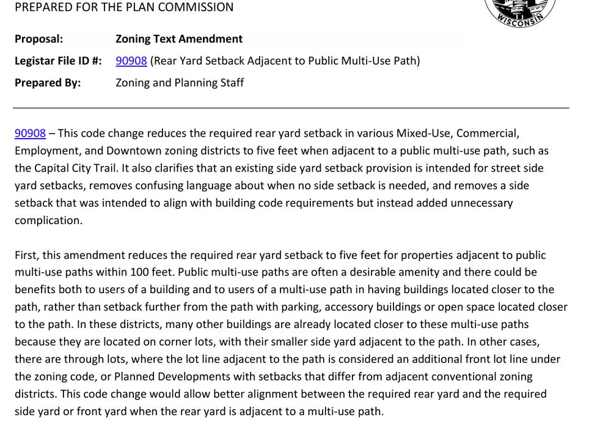
The Commission approved reducing rear setbacks to 5 feet for properties in mixed-use, employment, and downtown zoning districts near the Capital City Trail. Staff hopes this will allow for greater activation of trail space.
Blount and Dayton Street Density Increase
203-215 N Blount Street and 710-712 E Dayton Street
The Commission unanimously approved increasing an already-approved small apartment building from 8 units to 16 units, along with minor changes to siding materials.
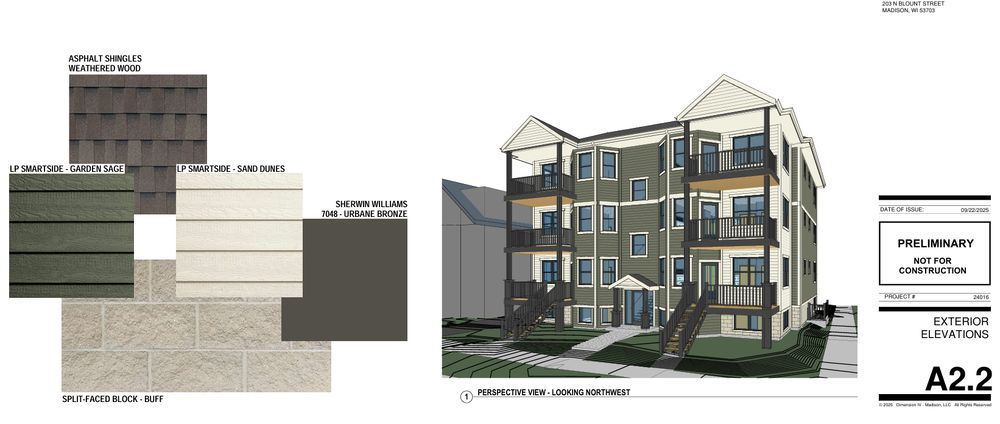
Community Process Concerns: Bob Klebba, a well-known local preservationist and chair of the Tenney-Lapham development committee, complained about the lack of a neighborhood meeting and requested the item be referred until such a meeting could occur. Klebba stated that Alder Mayer blocked an attempt to refer the item to a future Urban Design Commission meeting to allow for neighborhood engagement.
Planning Context: The site is located in a TOD overlay, but because it was originally a Planned Development (PD), it doesn’t receive automatic height bonuses and requires modification of that plan. The modification is similar enough to the original proposal that it doesn’t require Common Council approval.
The addition of 8 extra units in a similar form to the original development represents core “missing middle” housing - small-scale multifamily that fits neighborhood character.
The project had already been approved by the Urban Design Commission with some conditions.
Commercial Avenue Large-Scale Development
2150 Commercial Avenue - 241 Units
CSM Legistar 7730051 UDC Approval Legistar 7451268
The Commission approved a certified survey map to create one large lot from the current parking lot between Packers Avenue and Oscar Avenue north of Commercial Avenue, to accommodate a 241-unit single building. 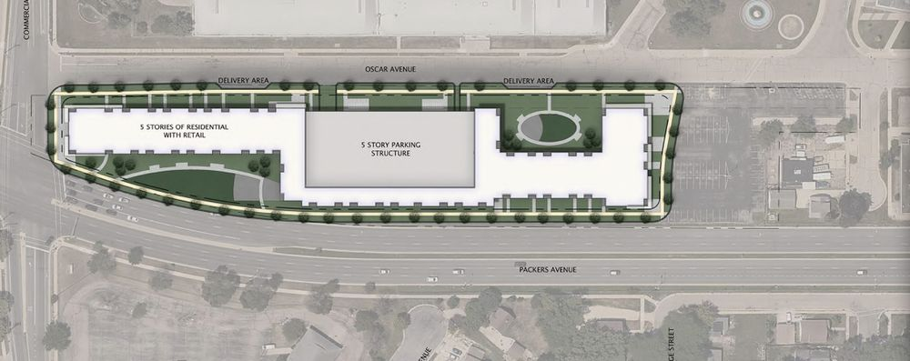 Urban Design Concerns: The Urban Design Commission had concerns about the single building’s massing and will require resubmission to UDC.
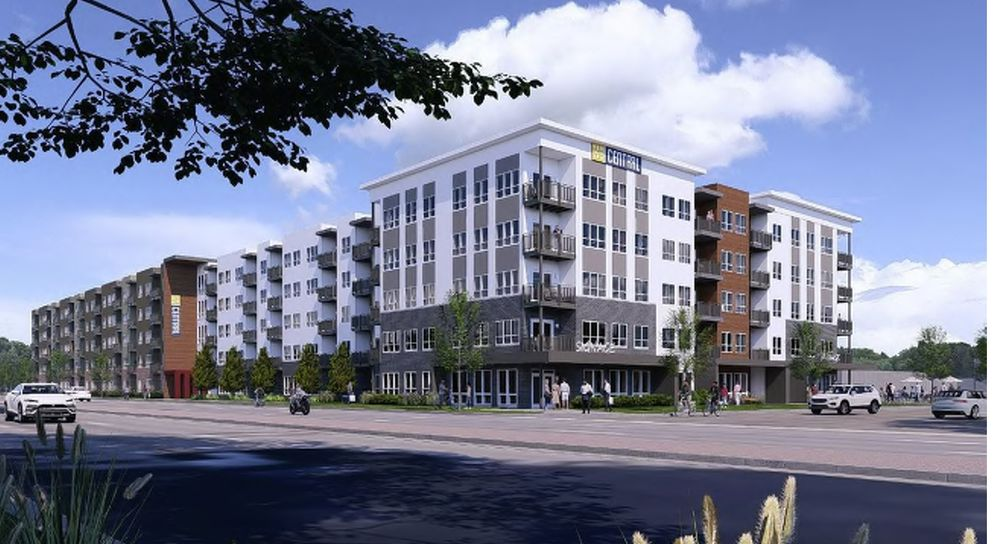
Approval Process: This building will not return to Plan Commission because it is a permitted use in the proactively rezoned area, representing an interesting test case for allowing large apartment buildings by right in such areas.
Property Owner Concerns: The other owner of property at Oscar Mayer expressed concern about a single building potentially blocking views from Packers Avenue of any future development from their property.
UDC still needs to grant final approval.
Area Plan Presentations and Discussion
The Commission received presentations on draft Southwest and Southeast Area Plans, scheduled for approval in Spring 2026.
Southeast Area Plan
Staff proposed upzoning several areas and promoting mixed-use corridors, while eliminating opportunities for increased density in certain Low-Medium Residential (LMR) situations.
Highway 51 Planning: Much of the plan depends on whether WisDOT allows boulevard treatment for US Highway 51, which would enable more pedestrian-friendly development along the corridor. The city plans to create a plan for Highway 51 assuming the current 45 mph limited-access design, but wants to illustrate what a more urban option would look like and be prepared if WisDOT chooses that approach for Highway 51 reconstruction.

Major Redevelopment Sites: - Old American Family site (Highway 51 at Highway 30) might be converted into a neighborhood - Cottage Grove Road near Walgreens could see further redevelopment
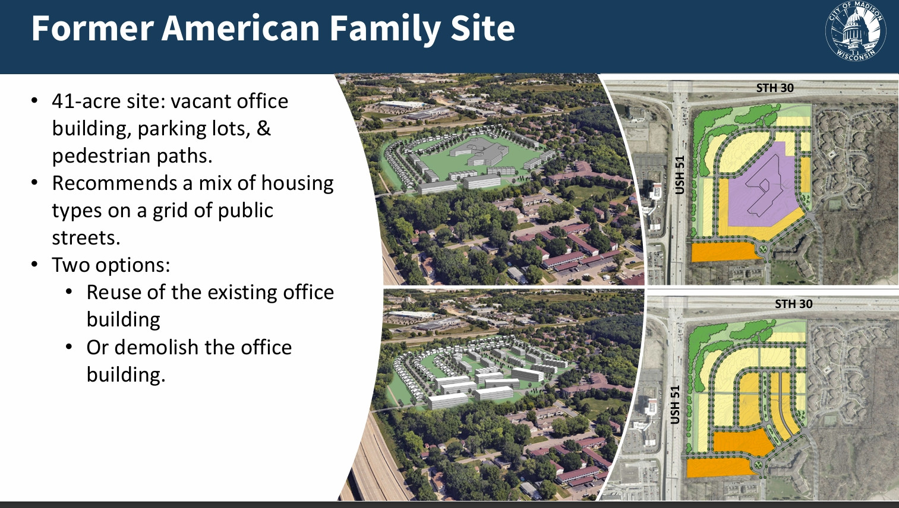
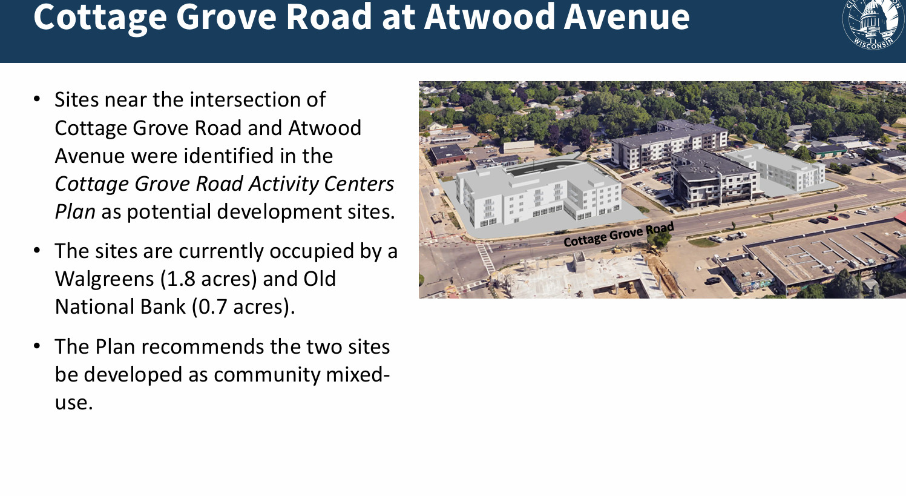
Community Feedback
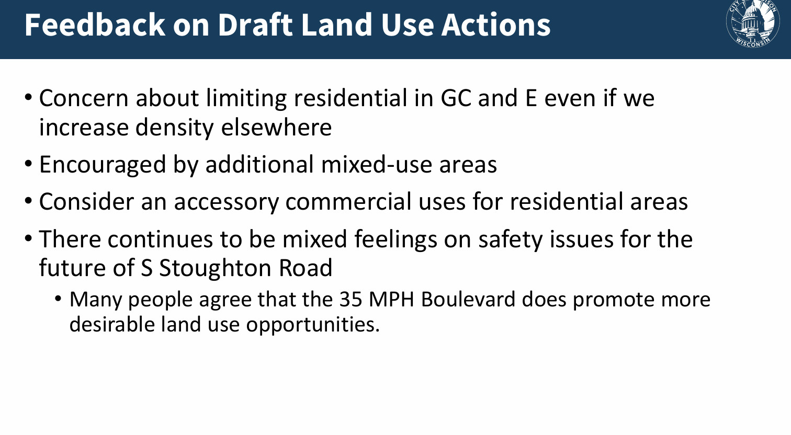
Residential Use Restrictions: Staff indicated they are limiting residential uses in some areas because they don’t believe all locations are appropriate for housing, particularly along Highway 51 or adjacent to industrial spaces. They don’t think mixed-use should be implemented everywhere.
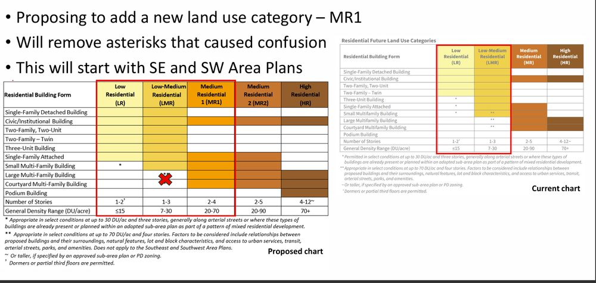
This approach, along with the recent Verona Road apartment building debate, highlights conflict between those who believe residential uses could go anywhere versus planners who generally want to use zoning to separate what they consider incompatible uses.
New Land Use Category: Staff proposed adding MR1 (Medium Residential 1), a new category between Low-Medium Residential (LMR) and Medium Residential (MR), while also eliminating density increase possibilities in some LMR areas. There was implicit concern that having different land use categories across different area plans could create confusion.
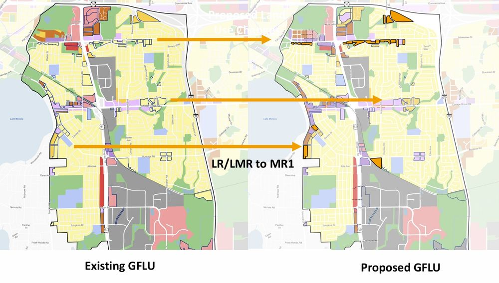
Employment and Industrial Preservation: Staff expressed concern about residential uses crowding out employment and industrial uses in the southeast area, wanting to preserve those land uses in certain plan areas.

Alder Pritchett raised concerns about health impacts for people living near industrial uses or in high-density areas, questioning whether pollution studies could be conducted.
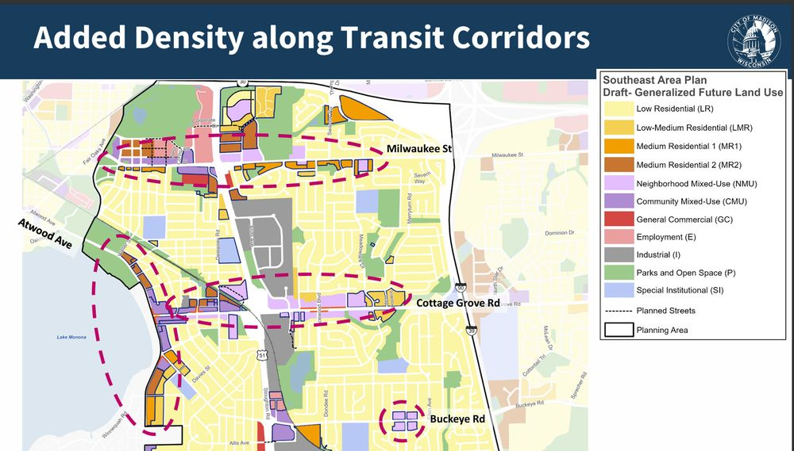
Southwest Area Plan
The new MR1 land use category features prominently in the Southwest plan to allow more mixed-use development. The plan proposes possible Schroeder Road realignment along with other bike and pedestrian improvements.
Community Feedback: 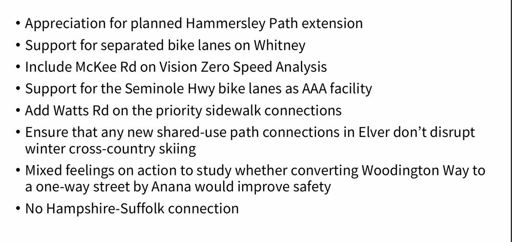 Comparative Scope: ZENZ Commentary during the meeting characterized the Southwest Area Plan as less dramatic than the Southeast plan, with much more significant changes being proposed for the east side than the west.
Proactive Rezoning for Residential Restriction: Staff proposed proactively rezoning the area near the Beltline and Verona Road from CC-T (Commercial Corridor-Transitional) to CC (Commercial Corridor) to limit residential uses, arguing the area is not appropriate for housing. This continues a trend of staff using area plans to restrict residential uses in areas they believe are unsuitable.
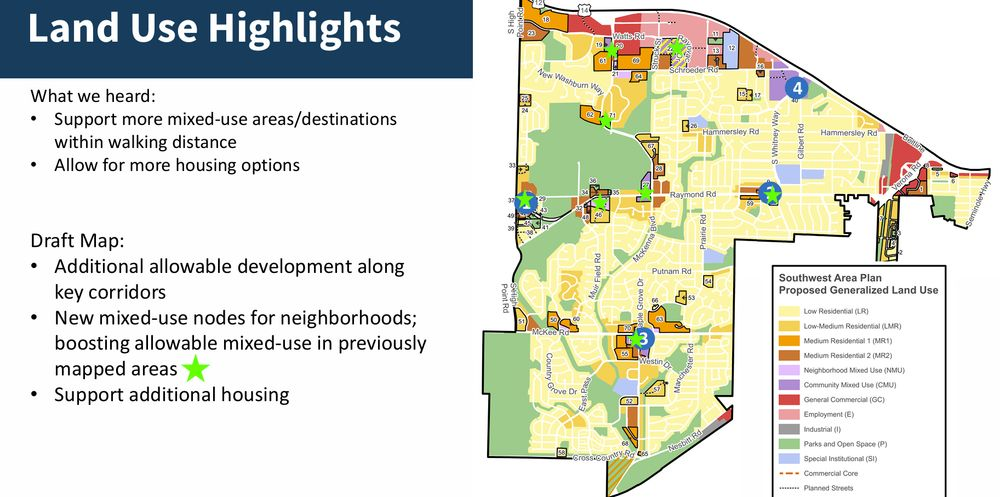
Commission Concerns: Commissioner Wasniewski expressed concern about limiting options by changing those areas near Verona Rd near the beltline to CC zoning.
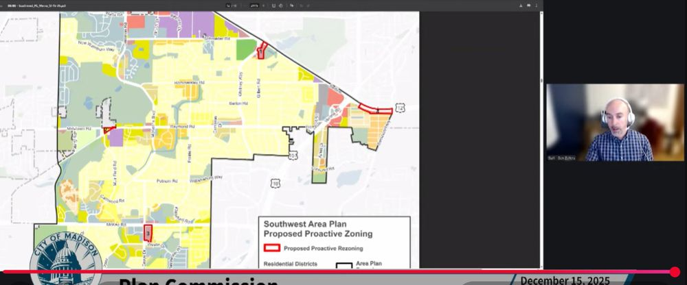
Commissioner Field questioned whether areas west of the commuter bike path (near Home Depot) could be designated for transitional uses instead of current industrial zoning. Staff responded that public comment emphasized retaining employment uses.
Commissioner Guequierre raised concerns about potential disruption from possible additional Beltline lanes following the WisDOT Beltline study, worried about losing employment areas along the corridor.
The area plan discussions revealed ongoing tensions between housing advocates seeking residential flexibility and planners prioritizing use separation and employment land preservation, with notably different approaches proposed for east versus west side development.
December 1, 2025
By Michael Zenz with the help of Claude AI
Also live-tweeted on Bluesky by ZENZ
Meeting Agenda: Madison Plan Commission
The Madison Plan Commission held a virtual meeting on December 1, 2025, advancing significant “Housing Forward” reforms to Transit-Oriented Development districts, approving the controversial no-parking downtown apartment building after months of delay, and greenlight several major housing projects.
Transit-Oriented Development Overlay Reforms
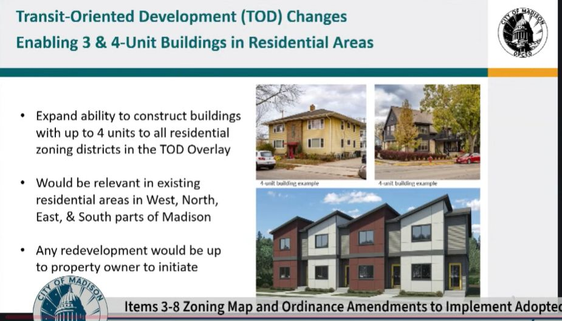
The Commission unanimously approved major changes to the TOD overlay district, advancing “Housing Forward” initiatives while rejecting an attempt to exclude a historic neighborhood from fourplex development.
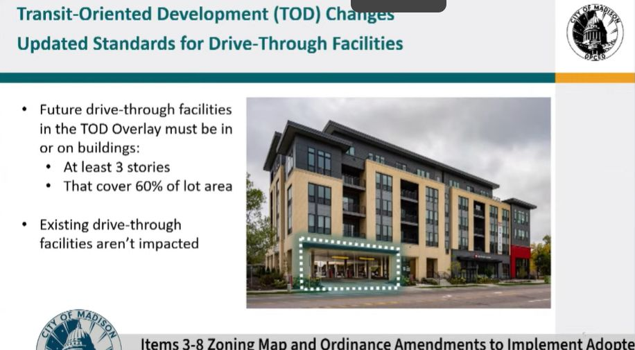
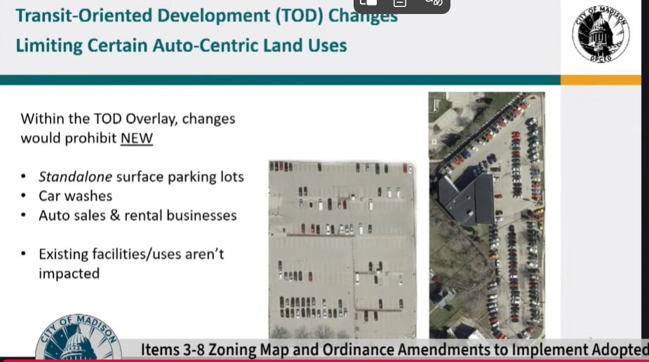
Key Changes Approved: - Allow fourplex construction by right - Ban standalone parking lots (private only; public lots like park-and-ride remain allowed) - Ban standalone car washes - Ban car sales facilities - Additional restrictions on drive-throughs - Allow auto rentals (added by amendment)
University Hill Farms Controversy: The only public speaker argued that allowing four units by right in University Hill Farms would harm the historic district. Alder Tishler proposed an amendment requiring conditional use review specifically for University Hill Farms, describing it as “one of the last of the planned communities in America…after 1948” and praising how it was “designed right.”
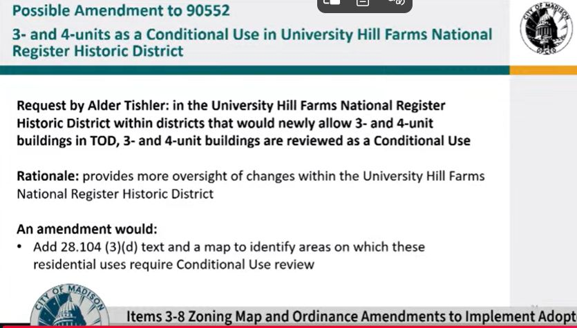
Tishler emphasized that University Hill Farms is nationally registered (though not a local historic district) and suggested its intactness is why the TOD runs through it. He noted the area already includes duplexes and he considers ADUs acceptable, but worried that allowing too much change might cause loss of historic designation. He suggested the curve of streets adds fragments of the neighborhood into the TOD and claimed it’s “the largest ‘residential’ area where the TOD runs through.”
Commission Response: Staff reminded the Commission that University Hill Farms is nationally registered but not a local historic district. When TOD overlay was originally implemented, there was a push to exclude historic districts that failed. Heather Bailey noted that changes of use don’t impact national historic designation or tax credits.
Commissioner Heck observed that all historic districts are unique and others already exist in the TOD. He argued that having a few 3-4 unit parcels improves ability for people to age in place. Commissioner Wasniewski noted he has met with aging people in Hill Farms worried about finding housing to stay in the neighborhood as they age.
Commissioner Wasniewski asked whether there had been efforts to make Hill Farms a local historic district. Staff indicated no application has been submitted, though it has been suggested in the past to protect historic character, but noted it would not prevent changes in use or development.
The Transportation and Housing Policy Committee had recommended passage of the TOD changes along with separation of auto rental from sales, but did not recommend excluding Hill Farms.
Tishler’s amendment failed, and the reforms passed unanimously.
Additional Details: The ban on standalone parking lots applies only to private facilities and wouldn’t prohibit accessory parking for businesses. There are grandfathering provisions for existing uses that can be transferred, though non-city parking like UW-Madison or state facilities count as private parking.
Proactive TOD Rezonings
The Commission unanimously approved several proactive rezonings to align properties with TOD overlay requirements:
West Side: - University & Whitney
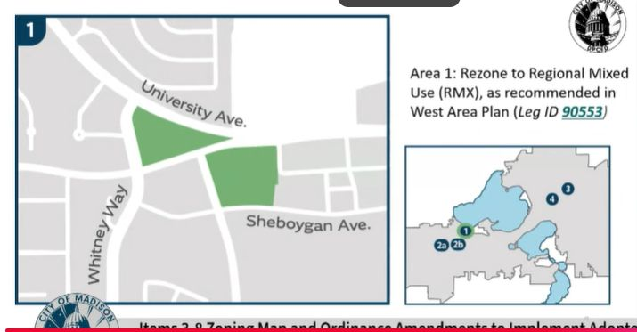
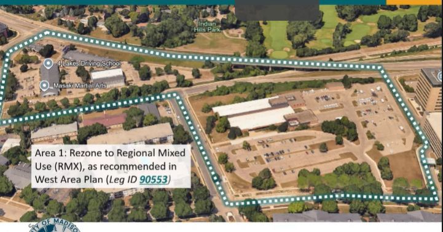
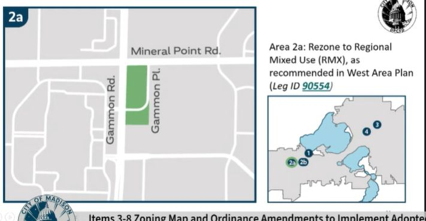
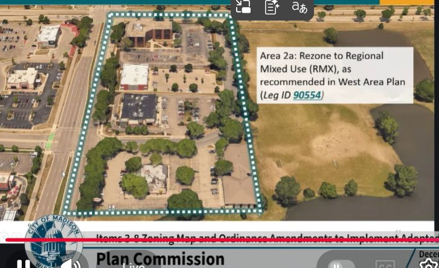
East Side: - Lien Road (North of Target)
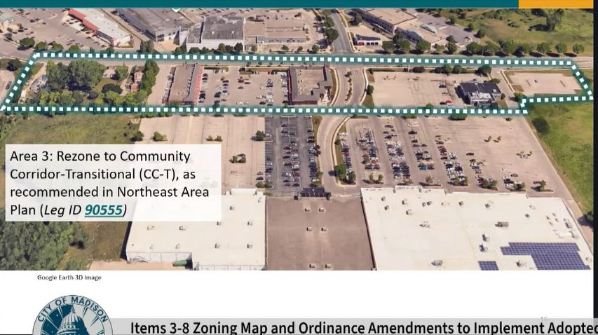
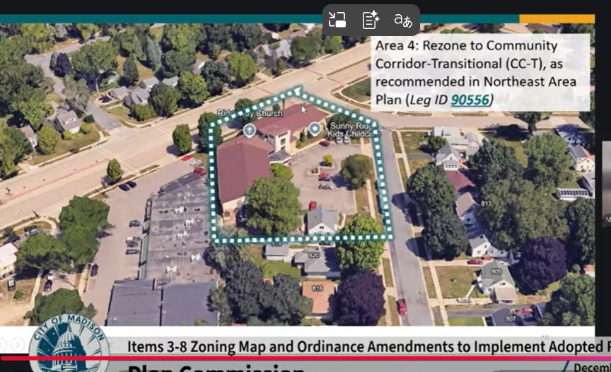
Cottage Court Development Standards
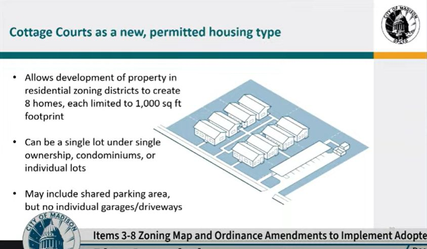
The Commission unanimously approved new zoning allowing cottage courts as a permitted use, with amendments to increase flexibility.
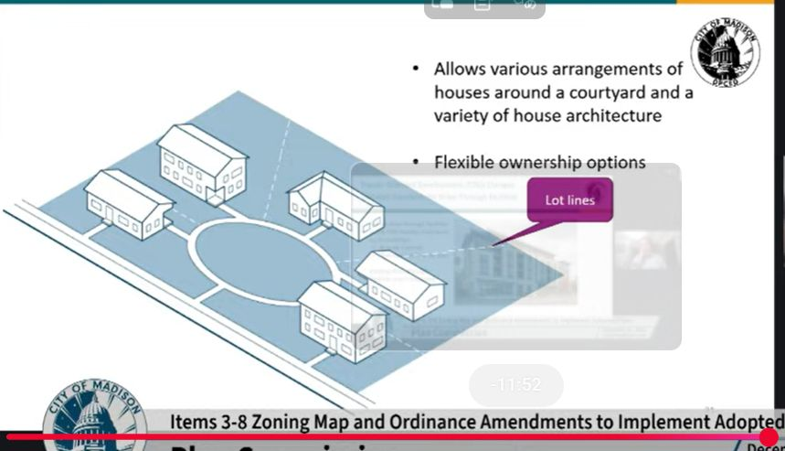
Base Proposal: - Maximum 8 units per development - Maximum 1,000 square feet per unit - Minimum lot size requirements - Minimum 6 feet between homes - Required courtyard of at least 20 feet by 20 feet (can include trees but not parking, driveways, or buildings)
Stakeholder Input: Public speakers including developers and advocates argued the restriction of 8 units and 1 acre minimum is too limiting.
Amendments Approved: 1. Allow two-unit buildings as well as single-family homes in cottage courts (still maximum 8 units total) - passed unanimously 2. Reduce required rear setback to 8 feet for cottage courts in all zoning districts - passed 6-2 (Heck and McCahill voting against)
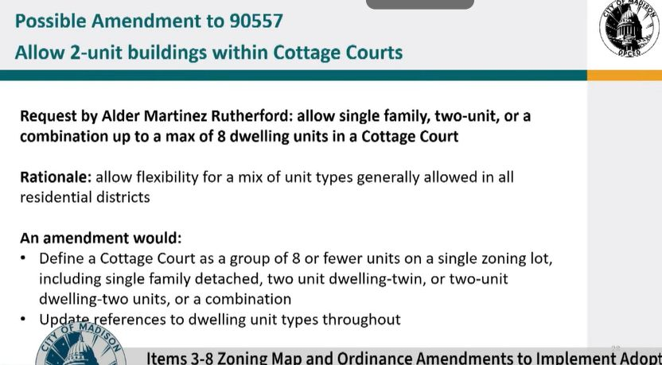 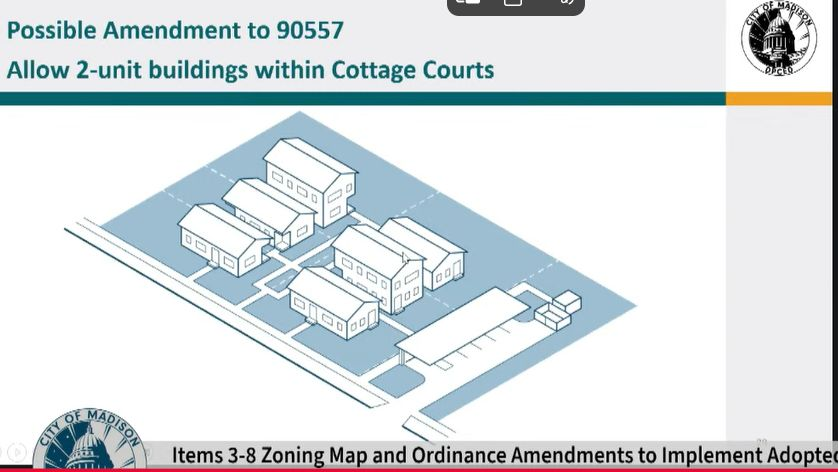
Design Discussion: Staff explained they want to maintain consistency of setbacks in zoning districts generally, though setbacks within the cottage court have more flexibility as they might be distinct lots.
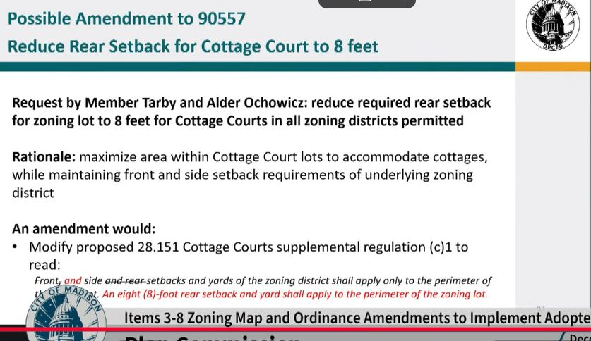
Commissioner Solheim asked how they determined size and unit limits. Staff indicated they envisioned a “missing middle” solution around 1/2 acre or larger and around 8 units to have desired amenities while staying in the missing middle category.
Alternative Development Paths: Alder Ochowicz asked whether cottage courts could be built on two half-acre lots for 18 units. Staff confirmed this was possible through “residential building complex” provisions meant for larger complexes, or through subdivision, though new state law requirements apply to larger sites.
Staff emphasized the main benefit is cottage courts will be allowed by right, while developers can still pursue residential building complexes or Planned Development routes requiring conditional use and other approvals.
Setback Debate: Commissioner Solheim initially moved to pass the cottage court changes with the two-unit amendment but without the rear setback reduction.
Alder Ochowicz argued that without the rear setback change, it would be challenging for developers to build cottage courts. He believed smaller rear setbacks would improve central common space without altering neighbors’ experience, noting other cities have smaller setbacks.
Commissioner Heck supported the motion without rear setback changes but acknowledged the city needs a broader discussion about setbacks. Commissioner Wasniewski moved to include 8-foot rear setbacks, arguing against creating barriers for missing middle developments.
Alder Tishler questioned what a cottage court would look like on a lake and whether the lake would be considered the front.
Commissioner Solheim was convinced by arguments and voted against her own original motion, supporting the setback reduction.
Downtown No-Parking Apartment Building Approved
139 W Wilson Street - 320 Units
After approximately nine months in approval limbo, the Commission approved the controversial 16-story, 320-unit microapartment building with no parking by a 6-2 vote (Alder Glenn and Commissioner Heck voting against). The project does not require Common Council approval.
Developer Modifications: - Management office relocated to first floor - Relocated some bike parking to address concerns about bikes entering through the front door - Reduced trash collection to twice weekly
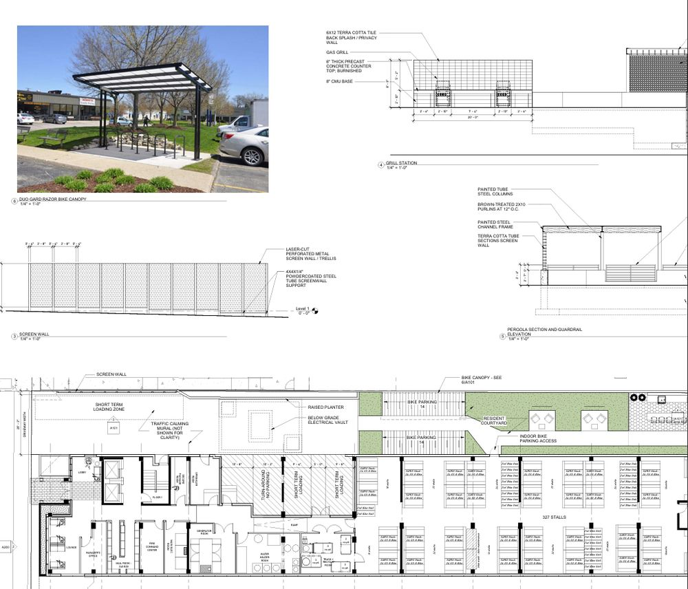
Bassett Neighborhood Opposition: The Bassett neighborhood remained dissatisfied, arguing: - Delivery vehicles cannot turn around in the drive area - claimed even smaller Amazon trucks cannot maneuver as modeled - The driveway cannot function unless multiple vehicles are never present simultaneously - Only solution is a staff person watching the drive area all day - Manager and maintenance staff cannot adequately monitor from the first floor office - Congestion will spill into public right-of-way and block the Wilson Street cycle track - The building contains too many people for the available space
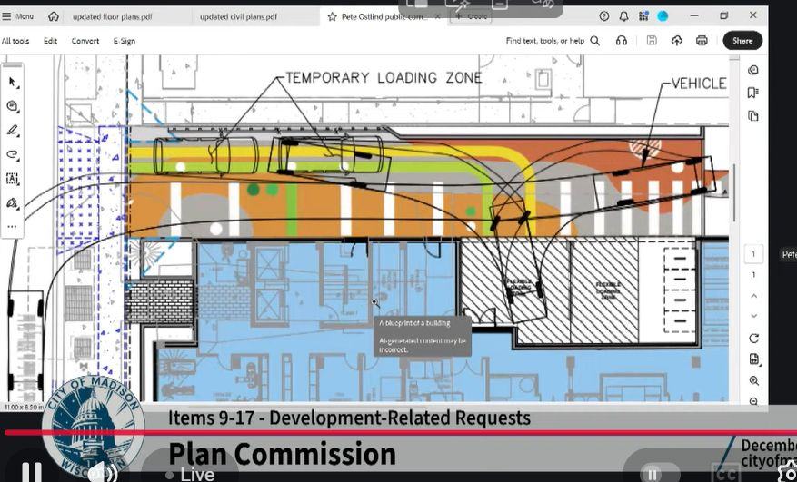
Management and Operations: Commissioners Solheim and Heck questioned how building maintenance, cleaning staff, and resident cleaning services would be handled. The developer indicated they would have to park off-site or be dropped off, with building management enforcing a zero-tolerance policy.
Garbage and recycling logistics were discussed, with potential need for more frequent recycling pickup since it cannot be compacted.
Commissioner Solheim suggested a glass wall on one side of the manager’s office for line-of-sight to the cycle track. Developers expressed openness to this.
Infrastructure and Monitoring: Commissioner Heck felt the management plan was “thin” and questioned whether it should include more detail about complaint handling. Staff indicated revised conditions already request further details, particularly regarding cycle track intrusions.
Commissioner Guequierre asked whether staff verified delivery vehicle turning radius feasibility. Staff confirmed it’s a tight turn but workable. Commissioner Solheim suggested adding bollards at the curve to prevent trucks from going over the curb by the cycle track, though such improvements in the right-of-way might not be within Plan Commission’s authority to require as conditions.
Commissioner Heck questioned whether a deposit could be required for future traffic improvements. Staff believed existing Traffic and Engineering conditions could cover site-specific problems that might develop.
Commission Votes: Commissioner Guequierre moved to approve with an added condition requiring the manager’s office to have a clear view of the cycle path. He supported the “experiment of an auto-free apartment downtown” and believed the conditions enable this.
Commissioner Heck stated he’s not concerned about buildings without parking generally, but wasn’t convinced this building will work operationally. He predicted it will be a “parking/loading disaster” and felt the developer didn’t respond appropriately to the previous meeting’s requests, believing it needs “almost a 24/7 manager.”
Alder Verveer agreed with Heck, arguing conditional use standards 3 and 5 cannot be met. He didn’t believe the management plan addresses concerns adequately, though noting the neighborhood supports increased density and lack of parking. He concluded the building cannot be serviced without disruption.
Student Housing Development
450 W Gilman Street - 118 Units
The Commission unanimously approved demolition, rezoning, conditional use, and certified survey map for a 16-story, 118-unit student-focused apartment complex at 450 W Gilman Street, with 44 beds of affordable student housing (enabled by 4 extra stories through the affordable housing bonus). The project includes a rooftop pool (not an infinity pool, as it has a walkway around it). Rezoning and CSM still require Common Council approval.
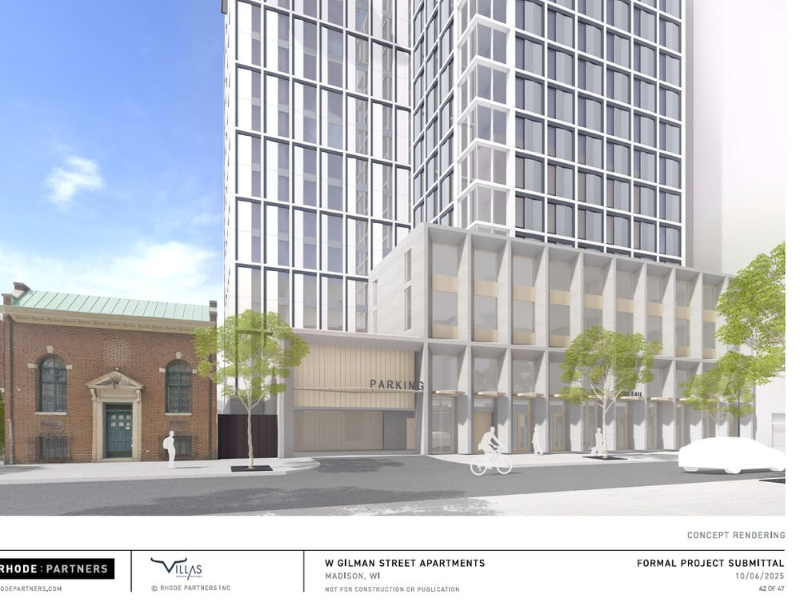
Demolition Controversy: Legistar 7703831
The project requires demolishing a building from 1890 that received a B grade from the Landmarks Commission, indicating some historic value. The building formerly served as the university hotel and currently contains apartments.
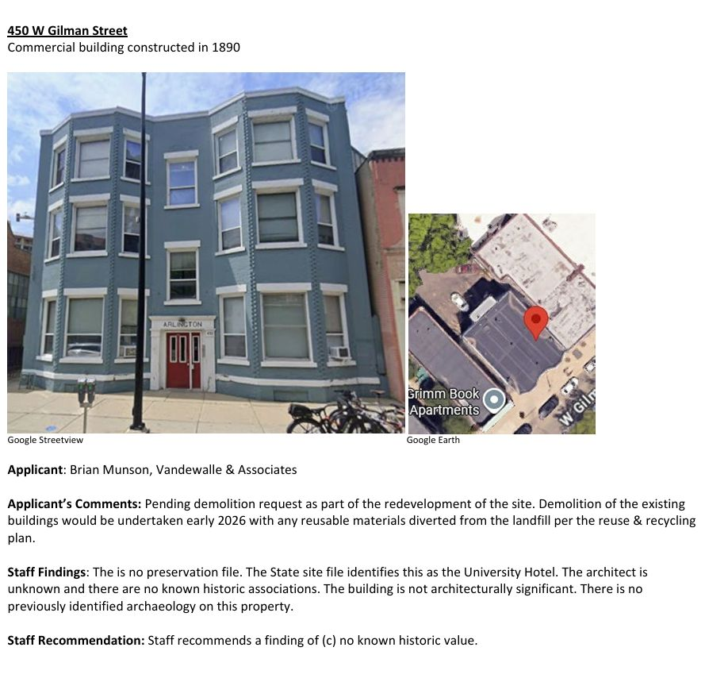
A public speaker discussed the building’s history, noting it’s “just as remarkable as a lot of landmarks” and requesting documentary record of the structure.
Staff initially found the building had no historic value, but Landmarks Commission determined it had some value.
Neighbor Concerns: The owner of the adjacent Grimm building argued the existing building doesn’t fit the area. She owns a nearby building and worried the new construction will block sunlight and cause mold to develop. She also suggested Landmarks should have investigated the history of the Port Bella, which will also be demolished, mentioning possible mafia involvement.
Commissioner Heck asked about one speaker’s concern that people might throw bottles from the roof. The developer explained minimum balconies will prevent throwing objects, and the roof will be managed when open. They noted they routinely monitor impacts on adjacent foundations, including older ones.
Commissioner Heck wondered whether the developer could help Grimm document their foundation’s current state. Staff recommended against this as a private matter between parties that the city shouldn’t involve itself in.
Legistar Links: - Rezoning 7710956 - Conditional Use 7698222
Whitney Way Apartment Conversion
501 N Whitney Way - 42 Units
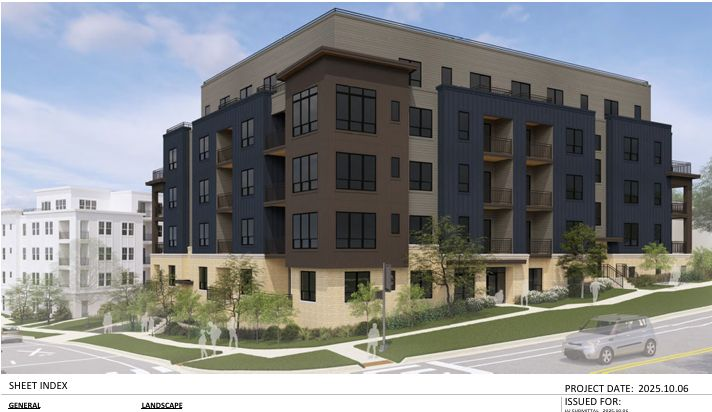
The Commission unanimously approved a conditional use to demolish a 15-unit building to build a 42 unit building at 501 N Whitney Way in the Traditional Shopping Street and TOD district. The project requests one additional story beyond what’s normally allowed. Staff supported the height with some adjustments to soften massiveness, including facade changes on the bottom right side.
The project eliminates surface parking.
Neighbor Concerns: One neighbor expressed concern about bright lighting at the front door near their bedroom windows and worried rents in the new building would be more expensive than the existing affordable older building.
The developer committed to only external lights for safety that will be downcast, with intent not to bother neighbors.
Zoning and CSM approval still require Common Council action.
Future Meetings
The December 15 Plan Commission meeting will feature staff discussion of the Southwest and Southeast Area Plans. Many developments scheduled for that meeting will be delayed to future dates.
The meeting demonstrated continued advancement of housing-friendly policies while highlighting persistent tensions between density goals and operational concerns, particularly around car-free developments in downtown areas.
November 17, 2025
By Michael Zenz with the help of Claude AI
Also live-tweeted on Bluesky by ZENZ
Meeting Agenda: Madison Plan Commission
The Madison Plan Commission held a virtual meeting on November 17, 2025, addressing a mix of routine approvals including an adult day care conversion, historic water utility infrastructure, and additional plat approvals for the Starkweather development.
Deferred Item
139 W Wilson Street Microapartment Building
The controversial 320-unit, no-parking apartment building at 139 W Wilson Street was referred to December at the developer’s request, postponing continued discussion of loading zone and management concerns.
Adult Day Care Conversion
4718 Hammersley Road
The Commission unanimously approved a conditional use to convert a commercial building to an adult day care center serving approximately 30 people at 4718 Hammersley Road.
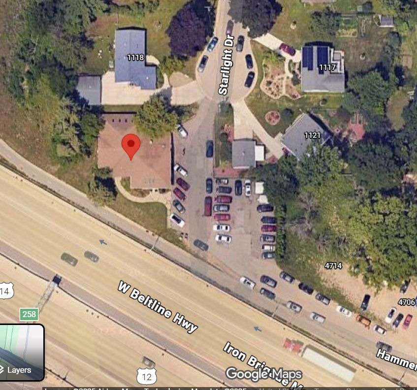
Public Concerns: The first public speaker expressed worry about people “wandering into” his yard. A second speaker questioned whether the facility was related to a nearby site that supposedly has many cars parked without license plates - though that other facility may not exist and isn’t owned by this operator.
Public comment also requested addition of a private sidewalk to Starlight Drive, but staff noted the city doesn’t typically recommend private sidewalks to cul-de-sacs without existing sidewalks. Any traffic through the property will be cut off.
Conditions of Approval: One condition imposed by staff requires addition of a stop sign off the property.
Historic Water Utility Well Reconstruction
Well 12 at 801 S Whitney Way
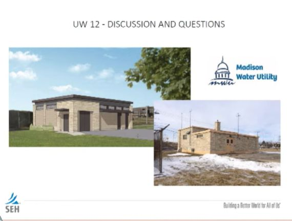
The Commission unanimously approved demolition of Well 12, along with conditional use and zoning changes for a new well building at 801 S Whitney Way.
Historic Significance: The Landmarks Commission found the well has historic value because it was built in the early 20th century Prairie well style and speaks to the history of the water utility. While the well was actually built in 1957, it follows the style of earlier wells.
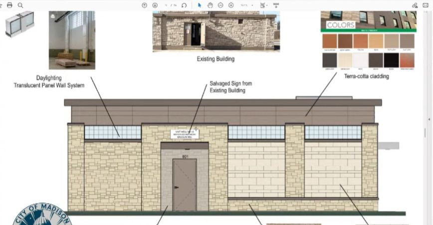
Utility Needs: The water utility seeks to rebuild the facility to enable greater use of its high-quality water on the west side and address existing deficiencies. The current well is becoming very weathered.
Preservation Plans: The water utility committed to “honor” the historic properties by building a similar well and using some existing limestone. They will preserve the Well 12 sign and some dress block, though reclaiming more stone or additional preservation would be too expensive.
Alder Engagement: Alder Tishler announced plans for a town hall in the coming days to discuss the project and questioned how much stone would be preserved, particularly advocating for preservation of the Well 12 sign.
Starkweather Plat Expansion
Additional Parcels Between Residential and Amazon
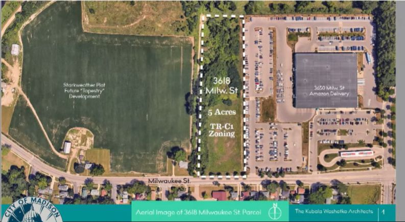
The Commission unanimously recommended approval of rezoning and platting for additional parcels of the Starkweather Plat (also known as Voit Farm) for medium residential and commercial use. The parcels are located between already-platted residential areas to the west and Amazon facilities to the east.
Infrastructure: An outlot to the north is designated for stormwater management.
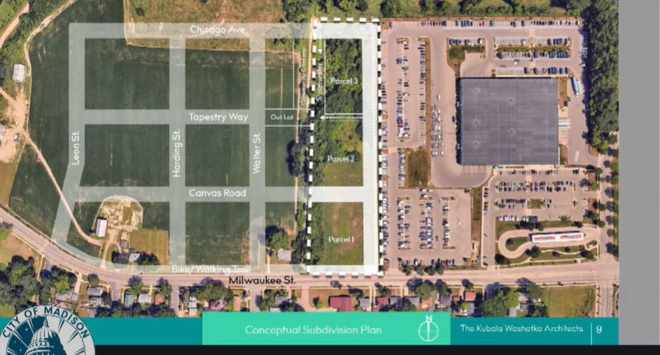
Public Concerns: One public comment raised concerns about the lack of sidewalk on the north side of Milwaukee Street, though the developer indicated land would be dedicated for sidewalks. The commenter also expressed worry about Amazon-related traffic near residential areas.
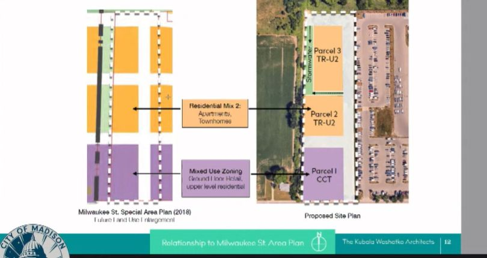
Approval: Both the certified survey map and rezoning for this latest portion of the Starkweather development received unanimous recommendation for approval.
The meeting demonstrated continued progress on major east side developments while addressing community concerns about infrastructure and neighborhood impacts, with particular attention to balancing historic preservation with functional utility needs.
November 3, 2025
By Michael Zenz with the help of Claude AI
Also live-tweeted on Bluesky by ZENZ
The Madison Plan Commission held a virtual meeting on November 3, 2025, with extended debate over a controversial 320-unit microapartment building downtown that raised significant concerns about loading zone congestion and management, ultimately resulting in a referral for additional planning.
Street Name Change Advisory
Ruskin Street to Huxley Street
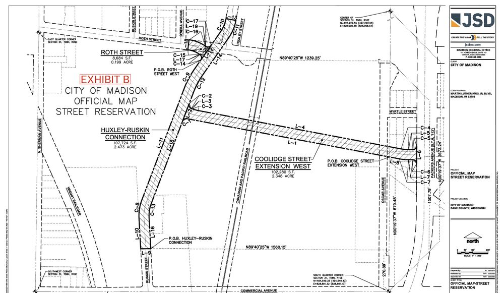
The Commission unanimously recommended changing the name of the southern portion of Ruskin Street to Huxley Street to accommodate a new through connection near the Hartmeyer development. The recommendation is advisory to the Board of Public Works, which had already approved the change.
Background: A new portion of Huxley Street is being built soon, with curbs already in place. The change will result in some address modifications for affected properties.
Business Opposition: Several businesses on Ruskin Street and others in the neighborhood objected to both the road connection and the address change due to associated costs. Opponents noted that Ruskin Street is already separated to the north. Commissioner Matthews expressed concern about the costs to businesses and indicated she would raise the issue at Common Council.
One particularly impacted business owner had been upset about the Huxley connection when a nearby apartment complex was proposed, as it would require moving numerous cars stored in the public right-of-way.
Planning Rationale: Staff clarified that keeping the street named Ruskin would create significant confusion, as there would be a street name change with no intersection or other feature to designate the change. Alder Field noted that a similar pattern occurs in his neighborhood and is problematic, supporting the name change as necessary.
Controversial Downtown Microapartment Development Referred
139 W Wilson Street High-Rise
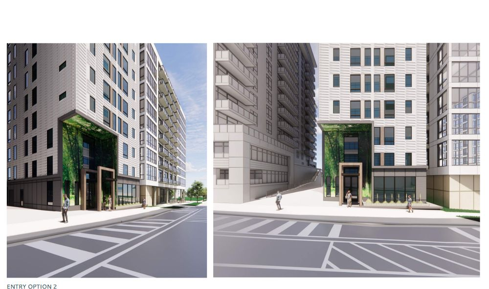
The Commission unanimously voted to refer consideration of a 16-story, 320-unit microapartment building at 139 W Wilson Street to a future meeting, requesting a comprehensive management plan addressing loading zone congestion concerns.
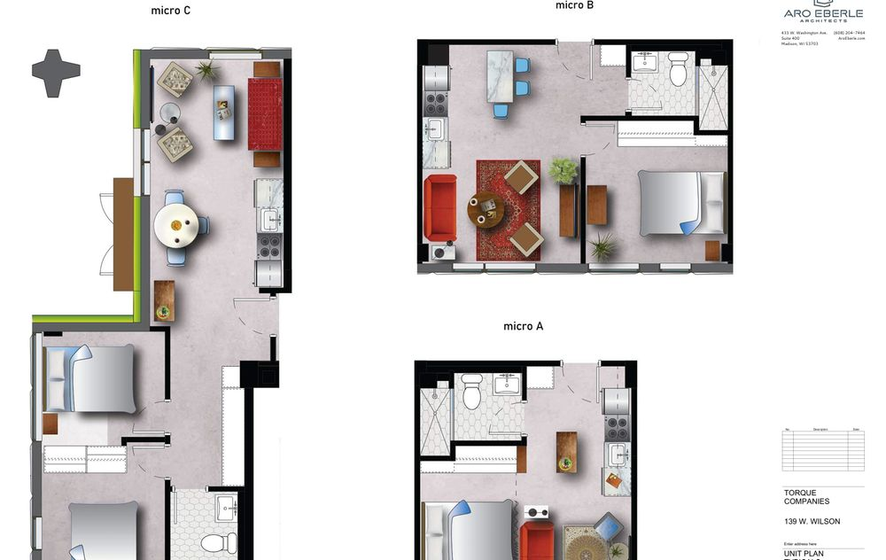
Staff Concerns: Staff expressed concern that the building may be too dense for the narrow lot and, with no parking provided, could generate excessive loading and pickup activity. The project had previously been stalled due to similar concerns about loading space and parking. Staff indicated that conditions for approval could potentially be met but significant concerns remained.

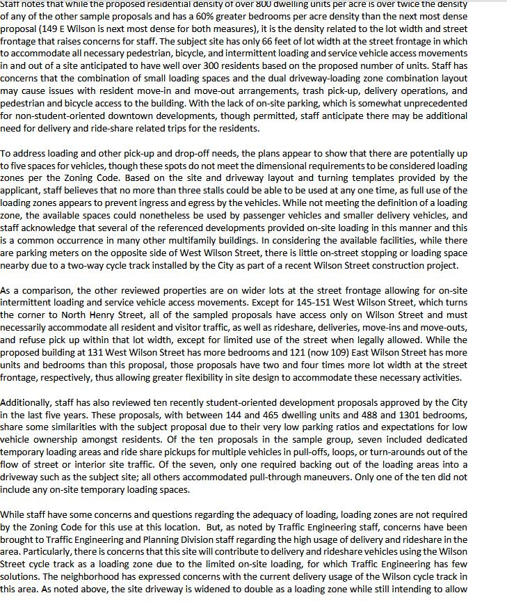
Project Details: The development represents a model urbanist approach to affordable market-rate housing: small units, 16 stories, and no parking to maximize housing density while keeping prices down. The building includes a top-floor management office along with co-working space and a clubhouse. The developer is not receiving any public subsidy.
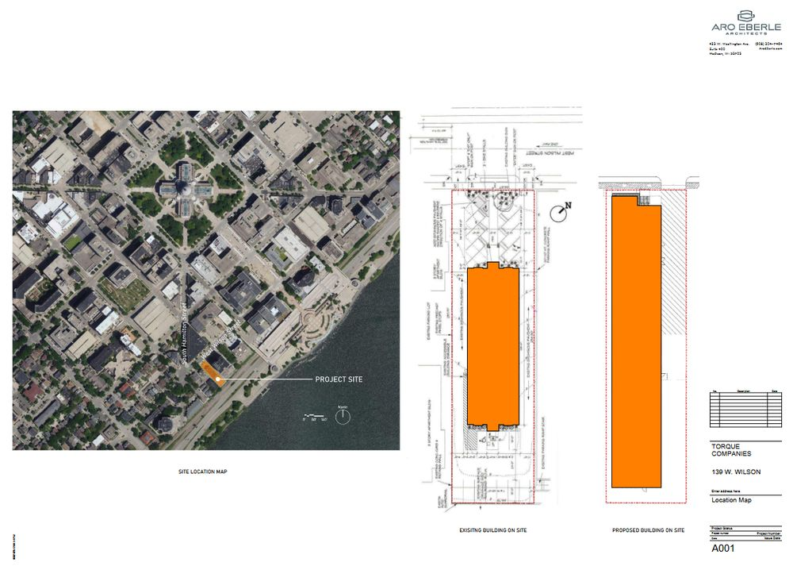
Community Opposition: A representative from a nearby apartment building objected, arguing the project needs more parking. The neighborhood association also objected, citing concerns about excessive traffic and activity for such a small lot, echoing staff concerns.
Developer’s Response: The developer provided scenarios for service and garbage vehicle access and planned for staggered move-ins. They proposed 9 or 14-month leases so that after initial move-ins (which they acknowledged would be busier than normal), there would be less ongoing traffic.

The developer pushed back against assumptions that residents without parking would necessarily order more food delivery, and noted available off-site parking in the Dane County garage and nearby apartment buildings.
Loading and Management Issues: Extended discussion focused on the loading dock and cycle track, with concerns about monitoring and congestion:
Commissioner Solheim questioned whether the 16th-floor management office could effectively monitor ground-level loading activity. The developer noted cameras would be installed and suggested adding an evening management shift if problems arose.
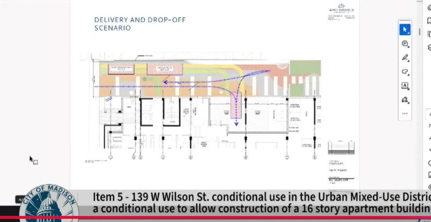
Commissioner Heck expressed concern about monitoring the loading dock and cycle track from the 16th floor only during daytime hours, preferring on-site personnel. He referenced management plans typically required for student housing.
Alder Glenn worried about initial move-in traffic and asked about off-site parking options. She was particularly concerned that residents would park on nearby streets.
Alder Guequierre estimated that if 10% of residents received food/package delivery or used rideshare on any given day, the loading dock might become overcrowded. Traffic staff worried people wouldn’t use the loading area if it wasn’t visible.
Design Modification Suggestions: Commissioner Solheim proposed moving bike parking to higher floors or relocating mechanicals to create more loading dock space. The developer responded this would reduce units and encroach on pedestrian-only paths. She also suggested moving the management office to the first floor, though the developer noted managers would likely move throughout the building regardless of office location.
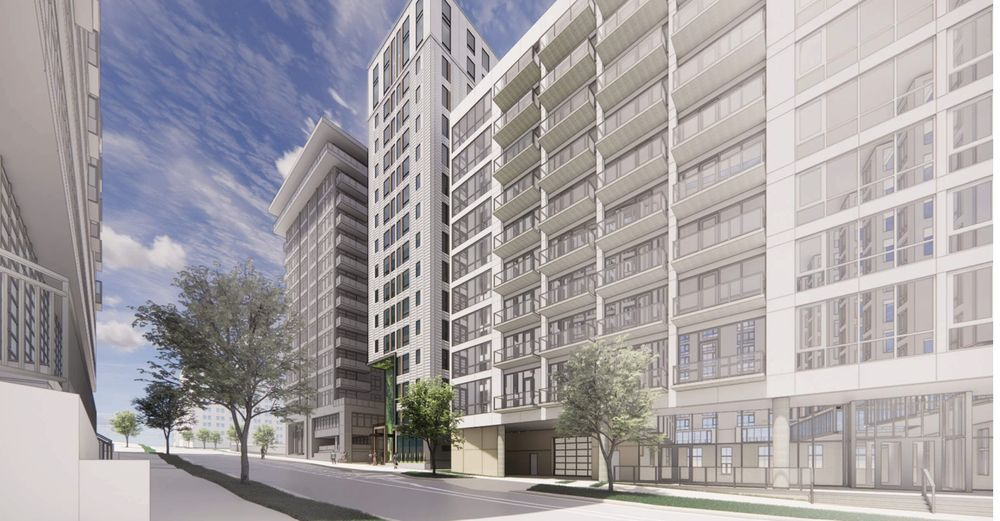
Alder Glenn questioned whether the building should have more elevators. Staff noted most comparable buildings have three elevators, though one has two, and suggested the building might be underserved - though this would be a building code issue.
Garbage and Bike Access: Staff confirmed that while the garbage pickup plan requiring trucks to back into the site is not preferred, it’s standard for downtown developments. Commissioner Heck worried about bike entry, though staff noted a side entrance would prevent all bikes from using one door. Heck remained concerned about bikes competing with garbage trucks.
Alder Verveer’s Position: Alder Verveer stated he was struggling with the application, believing there is no perfect solution for the impacts. The application had been referred from the Plan Commission in 2024 after the Urban Design Commission recommended denial. He noted cycle track blockage has been a problem that this development would likely worsen.
Verveer acknowledged improvements in the application but wanted additional conditions related to blocking public right-of-way, including: a resident manager, moving the office to the first floor and reconfiguring that space, and more detailed plans for waste removal and move-in/out procedures.
Verveer requested either referral with a public management plan in Legistar, or if approved that night, making the management plan a minor alteration requiring his involvement as the local alder and public input.
Referral Motion: Commissioner Solheim moved to refer so the developer could produce a management plan describing pedestrian, car, delivery, and garbage access, while recommending first-floor office space.
Commissioner Heck warned the developer he wouldn’t hesitate to vote against the proposal if requested conditions weren’t met.
Alder Figueroa Cole urged the Commission to focus on the loading zone at the next meeting rather than expanding into other issues, calling it “a good project that needs a little bit of adjustment in the zoning area.”
Broader Context: Commentary during the meeting noted this proceeding exemplified why housing construction is expensive even in places claiming to want more housing. Staff also clarified that while these units might be cheaper than other new units due to size and features, they won’t be as affordable as subsidized housing.
West Dayton Street Infill Development
The Commission unanimously approved a conditional use permit for two 2-unit buildings to be constructed in the backyard of two 3-unit buildings at 511 W Dayton Street.
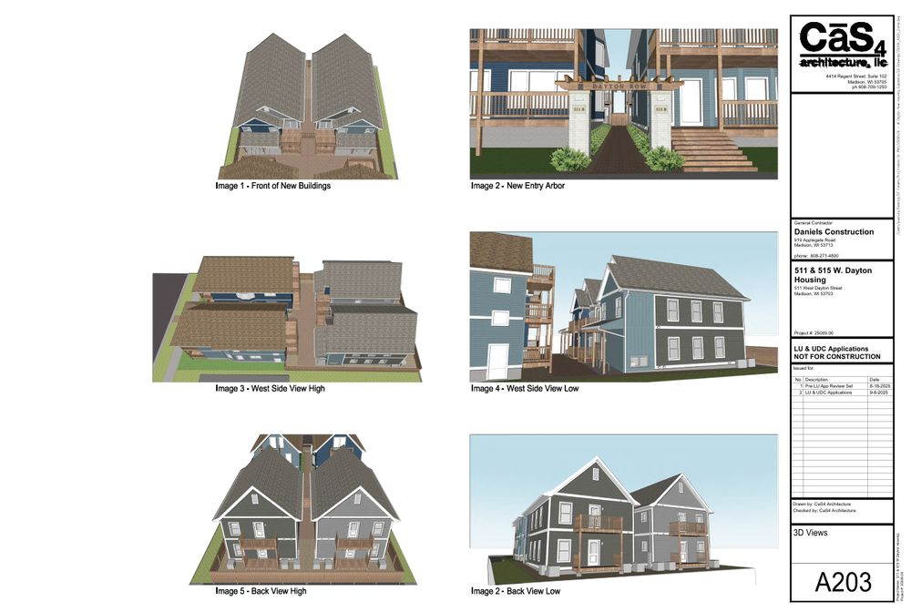
The Urban Design Commission had requested cladding changes, an additional side window, and a window in the bike parking area, while also wanting final UDC approval. The developer objected to adding a window in the bike area.
The Plan Commission removed the requirement for the bike area window and the requirement for a second UDC approval before granting unanimous approval.
The meeting highlighted ongoing tensions between housing production goals and managing neighborhood impacts, with particular focus on how dense, car-free urban housing can be successfully integrated into downtown areas.
October 20, 2025
By Michael Zenz with the help of Claude AI
Also live-tweeted on Bluesky by ZENZ
The Madison Plan Commission held a virtual meeting on October 20, 2025, approving several significant housing developments on Madison’s east side, including affordable senior housing and the return of a controversial subdivision proposal.
Major Housing Approvals
East Washington and Fair Oaks Mixed-Use Development
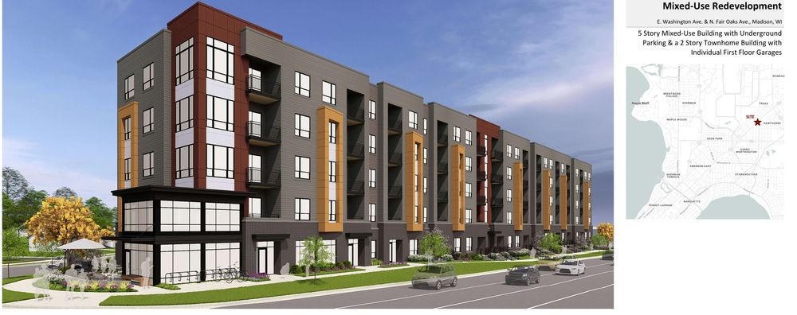
The Commission approved on the consent agenda a 171-unit apartment building at East Washington Avenue and Fair Oaks Avenue.
East Washington Affordable Senior Housing
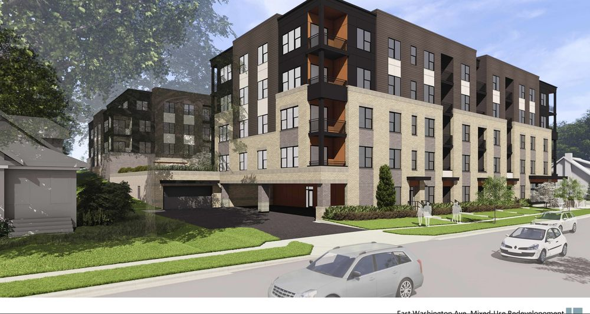
The Commission unanimously approved a five-story, 91-unit affordable senior apartment building at 3222 E Washington Avenue that will include offices for social services. The project is located very near the 171-unit building approved earlier in the same meeting.
Design Features: Though not required by ordinance, the building steps down to two stories along the neighborhood to the west. The site has dramatic elevation changes, and the city is requiring a traffic study to understand potential negative impacts on the surrounding neighborhood.
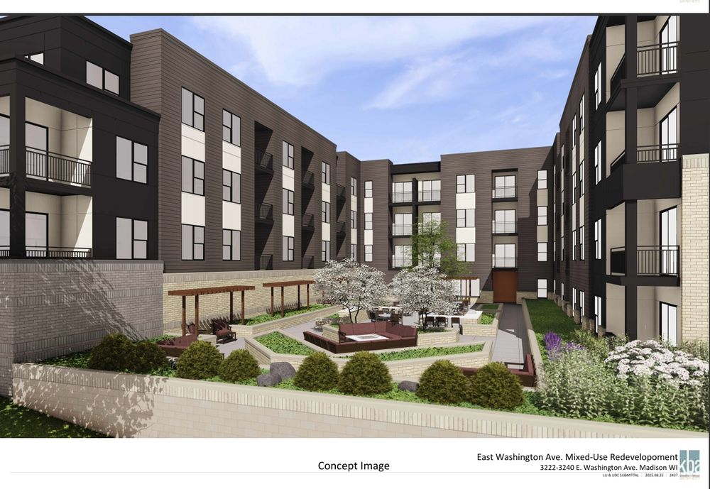
The building features a U-shaped design with a courtyard and a split parking garage. Primary parking and bike entrances are located on East Washington Avenue.
Lutheran Social Services will occupy the office space and maintain staffing during daytime hours.
Bike Parking Condition: Commissioner Heck questioned whether bike parking could be relocated from the East Washington entrance to the Ridgeway entrance, arguing it would be safer for cyclists to use Ridgeway. He added a condition of approval requiring the developer to explore moving the bike parking, which passed unanimously with the project.
Leo Living Subdivision Returns
The “Leo Living” subdivision on the far east side returned to the Commission after being previously rejected. Staff had initially determined that the plan did not adequately account for areas needed exclusively for stormwater management.
Revised Plan: The southwest portion of the property will now remain undeveloped, with part of it dedicated as parkland. Staff informed the Commission that before final plat approval, the developer must make additional refinements including more outlots for park space, stormwater management, and road improvements.

The Commission considered the zoning changes and preliminary plat for recommendation to Common Council, with one condition of approval being submission of an amended preliminary plat.
Legal Considerations: Staff noted that approval is recommended partly because the preliminary plat is generally consistent with the comprehensive plan, which under state law requires the city to approve it, though conditions can be imposed.
The Leo Living subdivision preliminary plat and zoning changes were approved unanimously.
North Orchard Street Extension
A 48-unit apartment building at 120 N Orchard Street was placed on file. The developers already have a conditional use approval for the site that is nearing expiration. Under recent changes allowing conditional use permits to be extended up to 5 years after approval, the developers will now extend that existing approval rather than seeking new approval.
October 6, 2025
By Michael Zenz with the help of Claude AI
Also live-tweeted on Bluesky by ZENZ
The Madison Plan Commission held a virtual meeting on October 6, 2025, approving several significant housing developments and advancing major “Housing Forward” zoning reforms proposed by the Mayor, while also controversially approving a drive-through coffee shop in a Transit-Oriented Development district.
Major Housing Approvals
Frances Street High-Rise Student Housing
The Commission approved a 16-story, 387-unit student apartment building at 305 N Frances Street. While the zone typically allows a maximum of 12 stories, the developer utilized a program that permits additional stories in exchange for building affordable units, with 10% of units receiving a 40% discount.
Notably, the building still meets height restrictions in the area because residential buildings tend to have lower per-story heights than commercial buildings, and the ordinances assume standard commercial story heights.
The project replaces the older Saxony building, which contains 230 units that are generally more affordable. Staff was uncertain whether there would be a net loss in total affordable beds, as the new building includes some very large units.
The Commission passed the conditional use and recommended certified survey map approval, with Commissioner Bhasin voting against the conditional use.
Raemisch Farm Final Plat
The Commission approved the final plat for the eastern portion of Raemisch Farm, which will contain the multifamily and commercial components. The developer indicated the single-family portion will be finalized in winter.
The preliminary plat was originally approved in 2022 but required resolution of airport building height restrictions. The 2022 approval was controversial, with the developer required to preserve woods adjacent to a school to the south and accept restrictions on building in the eastern portion for several years due to F-35 concerns.
Controversial Drive-Through Coffee Shop Approval
In a narrow 5-2 vote, the Commission approved a two-lane drive-through coffee shop in a Transit-Oriented Development (TOD) district at 53 West Towne Mall. This is similar to a similar project on Lien Rd that had a difficult review process, first going to the Urban Design Commission in February where its shipping container design was criticized. This design has been altered slightly as well but retained the same basic concept.
Design Concerns: The building only includes a second story because it’s required by zoning, with the applicant using it solely for mechanicals and storage. One public speaker questioned whether the developer was a registered company in Wisconsin, while Commissioner Guequierre wondered if there were too many coffee shops in the area.
TOD Standards Debate: Commissioner McCahill questioned how the project meets TOD requirements, such as no parking between the building and frontage street. Staff indicated all requirements were met, noting the presence of a pedestrian window and park bench.
Alder Field stated the standards were technically met so he would vote for it, but didn’t believe it truly meets the city’s vision for the area, suggesting potential ordinance tweaks.
Commissioner McCahill voted against, arguing the designated “main entrance” wasn’t truly an entrance. Commissioner Wasniewski also opposed, saying the project is inconsistent with city plans for the area, is entirely auto-oriented, and doesn’t allow customers to go inside.
Systemic Issues: Despite numerous complaints throughout the year from Plan Commission alders about auto-oriented developments in TODs, no substantial ordinance changes have been proposed to prevent such developments.
Housing Forward Zoning Reforms
The Commission advanced three major zoning text amendments proposed by the Mayor to facilitate housing development, with particular controversy around exemptions for an exclusive neighborhood.
Minimum Lot Size Reductions
The first proposal reduces minimum lot depth, width, and setback requirements in low-density residential areas to allow more divisions of very large lots. Staff indicated approximately 6,300 properties could be impacted by the changes, which could also affect the form of new developments.
Highlands Neighborhood Opposition: Residents from The Highlands neighborhood requested their special TR-R zone be excluded from the minimum lot area changes, arguing their zones have a special large-lot character and many properties recently signed 40-year private covenants restricting changes.
Staff responded that the changes are modest and maintain differences between zones, including large lot sizes in TR-R. Staff expressed intent to align special zones like TR-R and Planned Development with other city standards.
Commission Debate: Alder Guequierre, who represents the district, moved to eliminate TR-R from the setback changes, with Commissioner Heck seconding. Guequierre argued that lot shapes in the Highlands don’t lend themselves to splitting and the neighborhood has “unique historical value.”
Commissioner Wasniewski opposed the exemption, arguing no neighborhood should be exempt from change and that restrictions would reduce property rights. Alder Glenn also opposed, noting the city has grown by 100,000 people. Heck, despite seconding, said restricting the neighborhood from changes is “cringe.”
Guequierre was the only commissioner to vote for the amendment, which failed. The main motion including TR-R passed unanimously and was recommended to Common Council.
Height Transition Changes
The second proposal modifies stepdown requirements to allow buildings to reach the maximum height allowed in adjacent districts before stepdown is applied. Currently, stepdown must begin below the maximum height allowed in adjacent districts.
The Commission unanimously recommended approval.
Duplex ADU Allowances
The third proposal allows duplex accessory dwelling units (ADUs) without counting their square footage toward the property’s accessory structure maximum.
The Commission unanimously recommended approval.
Conditional Use Process Improvements
The Commission unanimously recommended approval of minor changes to streamline the conditional use process, extending conditional use approval validity from 2 years to 3 years along with other developer-friendly modifications.
Future Planning Initiatives
Planning Director Meagan Tuttle announced that the Mayor intends to soon introduce changes to the TOD overlay to facilitate construction of “missing middle” (small-scale multifamily) housing.
New Sherman Middle School
On the consent agenda, the Commission approved conditional use approvals for replacement facilities for Sherman Middle School and Shabazz City High School.
The meeting highlighted ongoing tensions between neighborhood preservation and citywide housing needs, with the Commission ultimately rejecting attempts to exempt wealthy neighborhoods from modest zoning reforms while approving auto-oriented development that conflicts with stated TOD goals.
September 15, 2025
By Tori Cooper with the help of Claude AI
Consent Agenda item passed: - Request for conditional use in the Parks and Recreation (PR) District for an outdoor eating area for a food and beverage establishment open after 9:00 p.m., and conditional use for amplified sound for an outdoor eating area at 5501 Schroeder Road in District 20 Legistar 89235.
Referred to October 6th Meeting to allow for review by the Urban Design Commission: - Request for conditional use in the Traditional Residential-Consistent 4 (TR-C4) District for a school, public or private, and for a building exceeding 10,000 square feet to allow construction of a new public school building to replace Sherman Middle School and Shabazz City High School at 1601 N Sherman Avenue/1610 Ruskin Street in District 12 Legistar 89232.
2025-2030 Park and Open Space Plan
Legistar 89620: Adopting the 2025-2030 Park and Open Space Plan as a Supplement to the City of Madison Comprehensive Plan (Citywide)
Lisa Laschinger, interim parks superintendent, presented the comprehensive plan highlighting Madison’s status as the fastest-growing city in Wisconsin’s fastest-growing county. The plan emphasizes the need for parks to meet the needs of aging generations by offering more community spaces.
Laschinger reviewed the Trust for Public Land survey, which examined state, county, city, and UW resources in comparison to green space offered through the parks system. Community engagement efforts were conducted in both English and Spanish to inform the proposal development. The community agreed that parks are integral to overall wellbeing in Madison, supporting the need for more skate parks, walking trails, bike paths, and dog runs.
Park use has returned to pre-pandemic levels for most activities and surpassed prior use rates in remaining areas. The committee recognized both the housing crisis and the need for park spaces around infill developments throughout Madison. Despite huge need and reliance on parks, Wisconsin invests less funding in these areas than neighboring states.
Madison Parks relies heavily on volunteers, who contributed almost $1.7 million through their time, effort, and donations in the previous fiscal year. The strategies outlined in the plan build off previously stated goals and are already being partially met through previous proposals.
Nicholas Davies spoke in opposition, concerned about bike parking. He observed over 15 cyclists at Monona Park over the weekend with nowhere to lock their bikes. Davies noted there’s a budget line item for vehicle parking but nothing specific for bike racks, despite Madison being a bike-friendly city. He urged the Plan Commission to consider minimum bike parking requirements for parks.
Commissioner Heck asked Laschinger to respond to Davies’s statement. Laschinger acknowledged that Davies was correct regarding zoning requirements for parks and recreation spaces. She explained that Madison Parks does consider cyclists; however, much less funding is needed for bike racks than parking spaces. Bike parking is currently included in the “furnishings” budget line but could be specifically added under “amenities” if necessary for approval.
City Staff Vaughn noted that comments regarding bicycle parking were forwarded to the zoning board for consideration.
Alder Guequierre drew attention to the East Towne and West Towne areas, which are being heavily developed but appear to lack green space. Laschinger confirmed these are two larger target areas Madison Parks hopes to address, recognizing the need for larger spaces given population growth and new residences.
Commissioner Wasniewski asked how the plans address inclusivity with older populations. Laschinger said this will be a focal point in the next five years, exploring amenities such as adult exercise features, walking paths, and pickleball.
Commissioner Solheim moved for an amendment to add bike parking to the budget, which was included in the item, ultimately leading to approval.
Black Hawk Middle School and Gompers Elementary School - 1402 Wyoming Way
Legistar 89234: Consideration of conditional use in the Suburban Residential-Consistent 1 (SR-C1) District for a school and for a building exceeding 10,000 square feet to allow construction of a new public school building to replace the existing school at 1402 Wyoming Way in District 18.
City Planner Ernest presented the project. Construction of the new school would begin in early 2026, with the existing building remaining until demolition in late 2027. The proposed building will be two levels and approximately 90,000 square feet. The new building will be more central to the site compared to the current building’s street-adjacent location. Additional access points will reduce traffic at the Comanche/Wyoming Way intersection.
Matt Hasse, part of the design team working with MMSD, reviewed traffic and pedestrian safety plans. The design aims to pull current traffic congestion internally to the site rather than continuing to jam up Comanche/Wyoming Way, offering relief to commuting residents and additional safety for students and staff.
Susan Bowersox for the design team reviewed floor plans, elevations, renderings, and building perspectives. The new building will be built into the hillside due to the site’s grading and topography.
Nicholas Davies spoke again, criticizing parent drop-off loops as having a poor track record. Davies argued this type of “child drive-through” creates a feedback loop that “induces demand and creates rather than alleviates congestion” as parents arrive earlier to get spots close to the building. He suggested closing off through traffic or making the area traffic-free to avoid bottleneck situations.
Alder Glenn asked for clarification on the loops and whether there would be designated spaces for parent drop-offs versus bus areas. Hasse explained three loops would break up congestion: Wheeler Road access for Gompers Elementary parents, the Monica Lane loop for Blackhawk, and the southern loop for buses. Glenn questioned whether straight-through options or making Wyoming Way a no-traffic zone during school hours might be better solutions.
Hasse assured the Commission they consulted with City Traffic Engineering early in the project. Due to site grading, there was more concern over pedestrian safety with hills in a straight-through design than with separating drop-off points into three loops. City Traffic Engineering preferred this option for alleviating traffic.
Commissioner Solheim questioned the grading, noting the renderings made the field appear flat. Hasse clarified the grading issue was with Wheeler Road—while the building site itself is flat, the road is not.
Commissioner Wasniewski asked about traffic projections. Hasse said they could accurately project bus volume, but vehicle traffic varies daily depending on weather, parent availability, and carpool fluctuation.
Alder Glenn asked about bike racks. Hasse confirmed there would be ample bike parking and connecting paths for cyclists and pedestrians to accommodate students, staff, and parents.
After extensive discussion about traffic and safety concerns, and despite Commissioner Wasniewski’s disapproval, the item was approved.
302 E Washington Avenue Development
Legistar 89434, Legistar 89375, Legistar 89273, Legistar 88957: Demolition permit, zoning change, conditional use for additional building height, and Certified Survey Map for an 11-story, 76-unit mixed-use building at 302-308 E Washington Avenue/15-27 N Butler Street in District 2.
City Planner Lisa Ernest noted this was the first demolition application since the code was amended earlier this year. The Landmarks Commission found historical value in the building but not substantial enough to prevent approval.
Several development team members presented design plans, building height specifications, and how they were utilizing zoning transitions affordable housing to add additional stories to sections of the building.
Lynn Bjorkman spoke in opposition, arguing the historical value of the building was not being given proper consideration. She referenced previous projects and a Capital Times article advocating for more documentation of landmarks and buildings lost to new developments. She argued there were insufficient building images documenting the building prior to potential demolition for future historians and architects.
Commissioner Heck was receptive to Bjorkman’s arguments and asked the development team if they would be open to documenting the building through photographs and redrawing building plans prior to demolition. While the team was open to photographs, Duane Johnson with the developer team was hesitant about documenting building plans. Johnson believed the Landmarks Commission already had substantial building plan documentation and was concerned about duplicating readily available resources.
Commissioner Heck clarified he didn’t intend to imply developers needed new plans—only to ensure documentation was on file for future reference. Johnson agreed that between photos they would take and plans on file with the City, they could bridge the gap to meet the documentation level Bjorkman argued for.
Both items passed with the condition of proper photographic documentation for future reference following demolition.
2025 Plan Commission Member Survey Results
Legistar 89885: Discussion of survey results.
Feedback indicated staff reports were generally favorable regarding background information. However, one comment observed that applicants provide extensive project details. The comment suggested that if the letter of intent provided necessary information, it could be cross-referenced in the Staff Report rather than repeated in findings, ultimately shortening project descriptions provided by staff.
Comments were made about how Staff Reports highlight conditions for approval. Traditionally, reports emphasize conditions they don’t think can be met or where the Plan Commission should spend additional time determining if conditions can be met. It was suggested the analysis include conditions that have been or could easily be met as a cross-reference for findings.
There was also a request regarding the time Staff Reports are released and when the Plan Commission is tasked with taking action on items. The City is looking into extending lead time and whether they have capacity to move up internal deadlines to provide information earlier. They explored moving meeting nights, but other days didn’t meet Plan Commission member constraints, so Mondays would remain the scheduled meeting day.
August 25, 2025
By Michael Zenz with the help of Claude AI
Also live-tweeted on Bluesky by ZENZ
The Madison Plan Commission held a virtual meeting on August 25, 2025, revisiting the controversial tree protection ordinance and discussing significant changes to area planning policies that could affect future housing density.
Tree Protection Ordinance Approved
The Commission unanimously approved changes to the city’s tree protection ordinance, expanding protection zones from a uniform 5 feet to 1 foot per inch of tree trunk diameter. The city presented additional evidence of tree damage on job sites and encroachments on the current 5-foot protection zone to justify the changes.
Stakeholder Input: City forestry staff met with Smart Growth Madison, a developer advocacy group, to address concerns. Smart Growth continued to argue for deferral, particularly concerned that tree damage by contractors could result in permit revocation.
The Realtors Association requested clearer processes for handling violations, agreeing that continued violations should have consequences but arguing that minor infractions should have compliance pathways short of permit revocation. They also wanted clarification that the tree protection zone stops at private property lines.
Public Support: Several speakers supported the ordinance changes, arguing that residents have had to constantly fight to protect trees during construction, that current modest penalties don’t adequately protect trees, and that street trees are especially important when private trees are removed for density.
Implementation Details: Alder Guequierre explained that at the Finance Committee, sponsors emphasized implementing serious consequences for intentional tree destruction, noting that some bad actors currently agree to save street trees then simply pay damages after cutting them down.
The city indicated they hope to negotiate tree protection processes upfront, with any damages reviewed by Public Works if developers disagree with Forestry staff decisions.
Commissioner Solheim clarified the appeals process: violations that can’t be resolved between developers and Forestry could result in permit suspension, with appeals going to the next Public Works meeting.
Commissioner Field moved to pass the ordinance while requesting clarity that the protection zone applies only to public right-of-way and that negative consequences apply only to unauthorized damage. Commissioner Solheim also wanted clarity about the revocation process.
Area Planning Policy Changes
The Commission discussed significant proposed changes to area planning policies, including the controversial “escalator clause” that allows increased density in Low-Medium Residential (LMR) and Low Residential (LR) districts under certain conditions.
Escalator Clause Elimination:
Staff proposed eliminating the escalator clause for LMR districts, arguing it would increase transparency by having density determined solely by land use categories rather than subjective Plan Commission decisions. Staff previously attempted to eliminate this clause during interim updates but additional criteria were added instead.
The Old Sauk Road development utilized this escalator clause for increased density.
Staff Rationale: Staff argued they want to reserve Low-Medium Residential for “missing middle” housing rather than apartment buildings, while retaining the escalator clause for LR districts. They suggested some LMR areas might be reclassified as Medium Residential (MR) to accommodate density.
Commission Concerns: Commissioner Heck worried about losing the ability to approve more housing, noting recent projects like Old Sauk Road and Northport developments benefited from the escalator clause. Staff indicated the 5-year comprehensive plan updates could allow land use changes to increase density.
Commissioner Figueroa Cole expressed skepticism that eliminating the escalator clause would dramatically increase clarity while retaining it for LR districts, worrying it would reverse progress in finding appropriate density locations.
Alder Guequierre questioned whether areas like the recent Old Sauk Road development could ever be categorized as Medium Residential given community pushback, highlighting a key concern about the practical limitations of the staff approach.
Alternative Approaches: Commissioner Field suggested reducing escalator clause density allowances by half rather than eliminating them entirely. Commissioner Solheim wanted suggestions for increased density to be introduced earlier in area planning processes to avoid surprising the public.
Commercial/Employment District Restrictions: Staff also proposed specifying which General Commercial and Employment districts are inappropriate for residential use, potentially requiring land use category changes before allowing housing in such areas.
Alder Glenn emphasized the value of flexibility in examining area nuances, while Commissioner Solheim wanted the ability to alter future land use designations if residential becomes appropriate.
Staff’s goal is to bar certain commercial and employment areas from residential uses, arguing they aren’t suitable places for people to live.
Housing Approvals
The Commission approved two significant housing projects on the consent agenda:
Fair Oaks Avenue Mixed-Use Development
Conditional use approval for a five-story, 171-unit mixed-use building and 6-unit townhouse at 922-930 N Fair Oaks Avenue.
Commercial Avenue Development
Approval for a 70-unit building at 3236-3300 Commercial Avenue.
The meeting highlighted ongoing tensions between environmental protection and development facilitation, while also revealing significant policy debates about how to manage future housing density in Madison’s evolving neighborhoods. The proposed elimination of density escalation tools drew considerable skepticism from commissioners concerned about limiting housing production flexibility.
August 11, 2025
By Michael Zenz with the help of Claude AI
Also live-tweeted on Bluesky by ZENZ
The Madison Plan Commission held a virtual meeting on August 11, 2025, with significant discussion focused on proposed tree protection ordinance changes and housing development approvals.
Tree Protection Ordinance
The Commission extensively discussed a proposed ordinance that would significantly expand tree protection requirements for development projects affecting trees in the public right-of-way.
Key Proposed Changes: - Extend the “tree protection zone” from 5 feet to 1 foot per inch of trunk diameter - Increase fines for removing trees from $125 to $150 per trunk diameter - Require developers to involve city staff to create protection plans for any work that might affect trees, including equipment exhaust - Grant authority to suspend or cancel permits for violations
Enforcement Approach: Staff acknowledged that current fines are insufficient deterrents, noting that removing an old tree should ideally cost closer to $50,000. Since they cannot incorporate such high fines into the ordinance, they hope the risk of permit suspensions will effectively protect trees.
Commission Concerns: Commissioner Heck expressed concern that negotiations between Urban Forestry and developers might lack transparency and not be obvious to approving bodies like the Plan Commission. He requested more information be made available to oversight bodies.
Commissioner Solheim raised concerns that tree condition is not adequately accounted for in the ordinance.
Commissioner Field wanted more information from stakeholders about potential impacts before proceeding.
Scope and Implementation: The ordinance applies only to trees in the public right-of-way (typically along streets) and use of land in the public right-of-way. Urban Forestry would not control use of private land, though larger portions of development sites could become subject to staff management.
The changes would require certified arborists to measure tree diameter for any work in the public right-of-way.
Outreach Concerns: Commissioners noted that Urban Forestry had not conducted extensive outreach on the proposal. Staff could not answer questions about balancing pedestrian infrastructure needs with tree protection when building sidewalks and bike paths, and had not consulted with developers about the changes’ impacts.
Commission Action: The Commission unanimously voted to refer the ordinance to the next meeting, expressing skepticism about the current proposal and requesting better outreach to developers both large and small about potential impacts.
Notably, the ordinance sponsors are generally pro-housing advocates, and the proposal was also referred by the Public Works Committee.
Housing Approval
North Butler Street Development
The Commission approved on the consent agenda a 73-unit apartment building at 121 N Butler Street.
Planning Process Updates
Downtown Area Plan: The downtown area planning process timeline is being accelerated to coincide with the University of Wisconsin-Madison planning process.
Economic Strategy Coordination: The planning process will also align with the Madison Inc Economic Strategy planning process to ensure coordinated development approaches.
The meeting highlighted ongoing tensions between environmental protection and development facilitation, with commissioners seeking greater transparency and stakeholder input in policy development processes.
July 28, 2025
By Michael Zenz
Election of Officers
Plan Commission began with the election of officers. The following were elected uncontested.
- Chair: Commissioner Gnam
- Vice-chair: Commissioner Solheim
- Transportation Commission Appointment: Commissioner McCahil
- Joint Campus Area Committee: Commissioner Heck
Revising the Area Plan Sequence
Plan Commission approved an adjustment to the Area Plan schedule so that the Downtown Area Plan coincides with other Downtown Madison and UW-Madison Campus planning. They also approved a delay to the Comprehensive Plan update so that more Area Plans can be finished before then. The city will also be delaying the complete Comprehensive Plan rewrite to 2033 to allow staff to focus on Area Plans. Although state law requires a comprehensive plan update every 10 years, according to staff our 5-year minimal plan updates count as satisfying this requirement.
Allow Excess Parking in a TOD Overlay
Plan Commission allowed a parking expansion to around double the allowed amount at 1502-1702 Pankratz Street in a TOD overlay, with only McCahil voting against (with Wasniewski excluded as a non-voting member). The property is owned by the construction company MSA, and they claimed that because of the nature of their business they have greater parking needs than most businesses. For instance, their employees may need to go to construction sites or meet clients who are not nearby or on a bus route. Many of their staff also do not live in Madison or on a bus route.
City staff support the request, and their report lays out why they believe the developer has satisfied the conditions of approval. Although commissioners McCahil and Wasniewski didn’t think that the developer provided adequate evidence that they needed parking nearly double what is allowed in the TOD overlay, having only provided a picture of their parking lot full of cars rather than a parking depend study, other alders and commissioners thought that the developer had provided enough evidence. Alder Field worried that any denial of the parking request could be reversed by a court, as was the case recently of a car wash denied conditional use in a TOD on East Washington Ave. Alder Guequierre wondered whether construction businesses like this one may require more parking than some other uses.
In Eastmoreland the Common Grace congregation sought Planned Development (PD) rezoning to allow them to demolish their current church at 3565 Tulane Ave. and build a 7000sq ft community center that will include a church, in addition to a 26 unit apartment building. Although the city typically does not use PD zoning for new developments, as it is a custom-made zoning to each lot, the inclusion of both a community center and housing required the rezoning from Traditional Residential (TR-C2) to a Planned Development.
The housing in this location will consist of 18 studios, three one-bedrooms, 4 two-bedrooms, and 1 three-bedrooms. The developer said that the large number of studios on this site would make the apartments more affordable (target at < 80% Area Median Income), though it would not be subsidized. Several neighbors spoke out in support of the development, though one neighbor said that she had just learned about the plans for the church (even though there was a community meeting about it) and worried about people living in small apartments in such density.
Plan Commmission recommended the zoning change to Council unanimously, with several members saying that they were impressed by the development’s ability to bring affordable housing to this area while retaining the community gathering place.
Alteration at Development for Red Caboose Site
On the consent agenda Plan Commission approved a major alteration to an approved building to replace the Red Caboose at 656 Willy St. The building will be larger, going from 45 to 53 units and now fully 5 stories. The old plans called for a part of it to be 3 stories. The first approval was controversial because of concerns about maintaining Jennifer St. Capitol views.
July 7, 2025
By Michael Zenz with the help of Claude AI
Also live-tweeted on Bluesky by ZENZ
The Madison Plan Commission held a virtual meeting on July 7, 2025, approving several significant housing developments and advancing key “Housing Forward” zoning initiatives aimed at streamlining residential development across the city.
Major Housing Approvals
Northport Drive Multi-Family Development
The Commission approved on the consent agenda a four-story, 80-unit apartment building at 709 Northport Drive in a planned multi-use site that will also contain a proposed four-story, 24-unit apartment building and an existing place of worship. The project included approval of a certified survey map for the lot split adjacent to the church.
City View Drive Mixed-Use Complex
The Commission approved a large-scale development at 2222-2304 City View Drive consisting of multiple buildings of various sizes, including a four-story mixed-use building containing approximately 4,600 square feet of commercial space and 60 apartments, plus a four-story 47-unit apartment building, a five-story 39-unit apartment building, and a five-story 40-unit apartment building. The project also included approval of a certified survey map.
Reiland Grove Subdivision
Controversial Residential Development
Legistar 88449 & Legistar 88206
The more controversial item involved a residential subdivision by Veridian on current farmland at Commercial Avenue and Reiner Road. The Commission unanimously recommended approval of both the rezoning and preliminary plat for “Reiland Grove” to the Common Council.
Community Concerns: One public speaker expressed concern that this is entirely a residential, car-oriented development without any commercial component. The speaker also raised issues about the width of streets and alleys in the development, noting a 100-foot right-of-way that may allow for high speeds without parked cars.
Developer Response: The developer noted that the city’s comprehensive plan calls for commercial development south of the residential area. Both the developer and staff indicated that commercial development often follows after residential demand is established.
Project Evolution: The city required the developer to relocate several residential lots around the proposed city park because they were thought to encroach on park uses, resulting in a larger public park. The development also includes a private park. The preliminary plat includes several outlots in the southeast designated for future development, which may include multifamily and/or mixed-use components.
Development Timeline: The subdivision will be developed over the next 15 years, with specific street design details to be determined later. Currently, only the geometry of lots and street right-of-ways are being established.
Housing Forward Zoning Initiatives
The Commission advanced three major zoning changes under the “Housing Forward” initiative, all receiving unanimous recommendations for approval at the following week’s Common Council meeting:
Duplexes in All Residential Zones
The Commission recommended allowing duplexes in all single-family zones, though not in Planned Development (PD) zones. This change builds on recent modifications to duplex policies that allowed more configurations of two-unit buildings, with some potentially created through internal conversions of existing homes.
Flag Lot Development
The Commission approved changes to facilitate “flag lot” divisions, which break a single large lot into multiple lots by extending a thin driveway portion to the street with the new lot placed at the rear. The changes will decrease the required width of the driveway portion, standardize lot size and setbacks, and streamline the approval process.
Commissioner Guequierre raised questions about potential conflicts with existing private covenants. Staff explained that the city does not track private agreements, but legal action could be taken if such covenants exist and are violated.
Downtown Apartment Streamlining
The Commission recommended allowing more medium-sized apartment buildings to be built by right (without Plan Commission review) in downtown districts: - In DC and UMX districts: increase height limit by right from 4 to 6 stories - DR1 district: increase by-right units from 4 to 12 units - DR2 district: increase by-right units from 8 to 36 units
Commission Concerns: Commissioner Heck expressed concern about how buildings adjacent to landmarks would be reviewed, noting this represents another policy that appears to empower the Landmarks Commission. Commissioner Solheim questioned what would happen if Landmarks requested changes to a permitted building and who would review such decisions if not the Plan Commission.
Staff explained that for downtown buildings permitted by right, Landmarks serves in an advisory capacity to the Urban Design Commission (UDC) and staff for approvals “using the standards that are in the ordinance.” Landmarks makes final decisions for landmark buildings and those in historic districts, while UDC decides matters for buildings adjacent to landmarks.
Commissioner Heck requested that staff map out the roles of various commissions in approving apartments that become permitted uses to avoid future misunderstandings about Landmarks/UDC authority.
Additional Approvals
Cemetery Expansion
Legistar 88555 - Conditional use for crypt addition to Saint Bernard of Clairvaux Cathedral at 2438-2462 Atwood Avenue
Additional Survey Maps and Zoning
Legistar 88557 - Certified Survey Map for property at 1626 and 1634 Baker Avenue
Legistar 88717 - Zoning assignment for property at 60 White Oaks Lane
The meeting demonstrated the Commission’s continued focus on expanding housing options while addressing concerns about the evolving roles of various city commissions in the development review process.
June 23, 2025
By Michael Zenz with the help of Claude AI
Also live-tweeted on Bluesky by ZENZ
The Madison Plan Commission held a virtual meeting on June 23, 2025, approving several significant development projects including a contentious 93-unit affordable housing development that sparked debate about comprehensive planning and residential safety standards.
Major Affordable Housing Approval
Verona Road Mixed-Use Development
The Commission unanimously approved a conditional use for a five-story mixed-use building at 4506-4514 Verona Road containing 324 square feet of commercial space and 93 apartments. This project became the evening’s most controversial item due to concerns about comprehensive plan consistency and pedestrian safety.
Project Details: - 45 one-bedroom units - 23 two-bedroom units
- 25 two-bedroom units - Approximately 1 parking space per unit (underground) - 324 square feet of rentable commercial space - WHEDA-funded affordable housing - On-site amenities include play area, community room, and case-management space
Staff Concerns: The item was referred from the previous meeting, with staff expressing concerns that the location is designated as general commercial in the comprehensive plan and may be inconsistent with residential use. Staff noted the site is designed for big-box retail development, and the comprehensive plan calls for commercial rather than residential use.
Madison Police Department expressed skepticism about pedestrian safety and anticipated more service calls. Routes to nearby parks require crossing Verona Road, and the frontage road carries approximately 3,500 cars per day.
Applicant Response: The developer addressed traffic and highway proximity concerns by describing sound mitigation measures, sheltered open spaces, and walkability to parks and groceries. They assured that the shared driveway with University Book Store would not be affected.
Community Opposition: The Orchard Ridge Neighborhood Association, located west of the site, expressed concerns about traffic safety in the area. Some residents characterized the placement of low-income housing in this location as “modern redlining” and creating a “polluted ghetto.” One resident specifically mentioned concerns about increased police calls associated with the low-income development.
Planning Discussion: The project highlighted tensions between housing needs and comprehensive planning. While the site is already zoned Commercial Center (CC), which allows residential use through conditional use permits, the comprehensive plan designates the area for general commercial use. Staff noted that conditional uses don’t necessarily need to be consistent with the comprehensive plan, but the plan serves as evidence for appropriateness.
A key issue was the developer’s use of minimal commercial space (~350 square feet) to classify the project as “mixed use,” thereby exceeding the 50-unit limit typically allowed in the zone - a strategy described as exploiting a zoning code loophole to enable more housing.
Commission Decision: Chair Gnam questioned the applicant’s walk time calculations, noting her own 12-minute walk to a park the applicant claimed was 4 minutes away.
Alder Field questioned why general commercial areas shouldn’t allow housing when mixed-use areas do. Staff explained that recent area plan changes from mixed-use to general commercial were made due to proximity to freeways or large commercial developments inconsistent with housing.
Alder Guequierre moved to approve the conditional use, stating that walking times to amenities and the Southwest Path support housing at this location. He noted that he personally walked the area and found pedestrian access “very good” without “a scary amount of traffic.” He suggested that big-box retail patterns are changing nationally and locally, and that the Southwest Area Plan might alter future land use designations.
Commissioner Wasniewski supported approval, saying his children had traversed the area safely in the past.
The Commission found that conditional use standards 1, 2, 4, and 8 were met based on: - Additional information in supplemental materials - Safety and ease of pedestrian access, including paths and crosswalks - Available access to parks and amenities - Plans for improvements at Britta Park - Potential long-term transitions of large-format retail areas
University Bay Drive Projects
Lakeshore Nature Preserve Visitor Center
Legistar 87841, Legistar 87657, & Legistar 88477
The Commission recommended approval of rezoning property at 1970-1978 University Bay Drive from CN (Conservancy) to PR (Parks and Recreation) District and conditional uses for an 11,500 square-foot visitor center for the Lakeshore Nature Preserve on the University of Wisconsin-Madison campus. The project also included street vacation and realignment to accommodate the development.
Commissioner Mendez recused himself from these items due to his employment with UW-Madison and direct involvement in the proposal.
East Washington Avenue Development
WMC Foundation Building Replacement
Legistar 88203, Legistar 88204, & Legistar 88209
The Commission approved demolition of an office building at 501 E Washington Avenue and conditional uses for a seven-story, 223-unit apartment building in Urban Design District 4. The project also included a certified survey map approval.
Tax Incremental Financing Districts
The Commission approved several TID amendments, including:
Legistar 88728 - Tax Incremental District #55 (Voit Farm) for affordable housing development
Additional TID approvals: - Legistar 88724 - TID #42 (Wingra) amendment - Legistar 88725 - TID #45 (Capitol Square West) amendment
- Legistar 88726 - TID #48 (Regent Street) amendment - Legistar 88727 - TID #53 (East Wilson Street) amendment
Referred Items
Several items were re-referred to future meetings at applicant requests:
- Legistar 88449 & Legistar 88206 - Reiland Grove development with 264 single-family lots and multi-family residences (re-referred to July 7, 2025)
- Legistar 88341 - Private school conditional use at 1402 Pankratz Street (re-referred to future meeting)
- Legistar 88336 - 80-unit apartment building at 709 Northport Drive (re-referred to July 7, 2025)
Additional Approvals
Legistar 88450 - Rezoning 1138 Williamson Street from TR-V2 to TSS (Traditional Shopping Street)
The meeting highlighted ongoing tensions between housing advocacy and comprehensive planning, with the Verona Road decision demonstrating the Commission’s willingness to prioritize housing development even when it conflicts with adopted land use plans. The discussion underscored the importance of comprehensive plan designations in determining development appropriateness and revealed strategies developers use to maximize housing density within existing zoning frameworks.
June 9, 2025
By Tori Cooper
Also live-tweeted on Bluesky by ZENZ
The Madison Plan Commission held a virtual meeting on June 9, 2025, approving several significant housing developments and multiple zoning code amendments to streamline development processes.
Zoning Code Amendments
Conditional Use Extensions Clarification
Staff presented proposed language changes to clarify that conditional uses for alterations are eligible for time extensions, not just the projects themselves. The goal was to make it clearer that Plan Commission approval is also extended when the City extends it, up to one year.
Linda Leferntz, the first registered speaker, agreed that extensions hadn’t been an issue in the past but voiced concern that the proposed language could still be clearer and might be misused by staff and developers because it was “too broad.” Commissioner Bhasin questioned what specific problem the language change was trying to address.
Zoning Administrator Katie Bannon explained that alterations do not need to come back to Plan Commission if they’re minor, but the current language makes it seem as if the Commission cannot approve minor alterations if they are approved by the city. The modification clarifies that Plan Commission approval is also extended when the City extends it.
After clarification, the item passed unanimously.
Place of Worship Requirements
Although part of the zoning packet, Linda Leonards spoke in strong opposition to changes regarding place of worship capacity requirements. She claimed “600 is too many for capacity,” mentioning that the same type of higher classification street requires conditional use. She argued the conditional use would no longer give preference to smaller, local streets. Despite her opposition, the Plan Commission passed the item unanimously.
University Avenue Mixed-Use Project
The Commission approved a six-story mixed-use building at 3535-3553 University Avenue and 733-737 N Meadow Lane containing approximately 4,300 square feet of commercial space and 146 apartments. The project required rezoning from TR-C1 to CC-T and multiple conditional uses.
Staff Colin Punt noted the applicant had previously received approval for a five-story building but now wanted approval for six stories. Staff raised questions about approval standard regarding building height, as the permitted height is five stories and this would exceed permissions. The previous design exceeded almost 30 feet above the transition line, but the current design exceeds about 12 feet because of step-backs to houses to the north.
The developer team, including Randy Christianson from JLA Architects and Walter Briggs Development, had conducted neighborhood meetings. They requested conditional approval for setbacks at the back of the building rather than the front to maintain building quality, and asked for the sixth floor for community mixed-use. The project includes 7-foot sidewalks to aid bike and pedestrian traffic.
Community Concerns: - Thomas Meloney opposed the project due to traffic concerns, noting 71 units were already being added before this project and calling additional units “horrendous.” He suggested the Capitol Clinic and “Puff and Pass” store site should be used instead, with entrance and exit solely on University Avenue - Michael Pomrany, representing the “overwhelming majority” in favor of development, appreciated the traffic calming deposit but wanted to know when it would be assessed and requested stronger traffic calming efforts - Rick Kedzior, a neighbor with a fourth-grader, had safety concerns and recommended a four-times deposit increase and a 5-7 foot wide pedestrian island on Meadow Lane - Jesse Dury worried about westbound University traffic needing to access the residential area
Project Details: - Studios rent for about $1,500/month (described as “market rate”) - Target residents are primarily professionals, UW Hospital employees, Epic employees, and occasional graduate students - All units will have yearly leases - Studios sell out fast, while two-bedroom units rent more slowly
A $10,000 deposit was required for traffic calming measures if the City needs to alter traffic flow due to development pressure. The City Engineer plans to conduct speed studies after development completion to determine appropriate traffic calming measures.
Both items passed unanimously, though Alder Field was excused for this vote.
Milwaukee Street Development
The Commission approved a four-story mixed-use building at 3450 Milwaukee Street containing approximately 6,200 square feet of commercial space and 156 apartments on Lot 4 and associated site improvements on Outlots 2 and 3 of the approved Starkweather plat (Voit Farm). The project passed unanimously.
Substance Abuse Treatment Facility
The Commission approved converting an assisted living facility at 842 Jupiter Drive into an approximately 54-bed residential substance abuse treatment facility with inpatient and outpatient counseling services.
Staff explained the facility would not have significant negative impact on the surrounding community, largely due to an experienced director being brought in from their Brookfield location and an approved security plan. Staff determined that ample street parking plus a small staff parking lot would be sufficient.
Ryan Schneider, the director from Brookfield, outlined the need for the facility, noting that one in five people develop a substance disorder in their lifetime and highlighting 380 addiction deaths in Dane County in 2023 alone. Key facility details: - Exclusively treats voluntary clients - No sex offenders or people charged with violent offenses would be admitted - No EMS vehicles (unlike the current physical rehabilitation facility) - Scheduled admission only, reducing ambulance traffic - Treatment stays range from 30 to 45 days, with 45 days being most effective - Since residents won’t have cars, parking is only for outpatient treatment and staff - Additional leased space in Madison provides more parking for outpatient care if needed
Both items passed unanimously.
Personal Storage Facility
The Commission approved a personal indoor storage facility at 6901-6933 Manufacturers Drive. City staff noted that zoning requires the proposed building to be a minimum of two stories, but determined changes to the design could be altered to fit current zoning requirements.
Staff cited concerns over future plans for the site regarding Dane County’s future intersection redesign. The lots may be required to convert ingress and egress rights to the interstate when there is a design change by the Department of Transportation, though the City doesn’t currently know when that may happen.
Weston Zuleger, speaking for the development team, said “We really don’t have any issues at this point” with altering the design to meet zoning codes and potentially turning rights over to the DOT in the future.
Commissioner Bhasin asked about effective facility designs. Alder Guequierre questioned why the developer was looking at including a decorative tower to satisfy the two-story requirement rather than adding more usable space, referencing a 2018 rule aimed at pushing for denser development.
Staff Bannon clarified there are no specific language markers defining what constitutes a second story or required footprint, contrasting this with stricter zoning rules being imposed on 7 Brew Coffee planned for construction at the edge of the east side HyVee parking lot on East Washington Avenue.
Despite some deliberation, both items passed unanimously.
Additional Approvals
Several other items were approved on consent or with minimal discussion:
Legistar 88329 - Street right-of-way vacation on Schewe Road
Legistar 88195 - Conditional use for restaurant-tavern and food sales at 10 S Paterson Street
Legistar 88202 - Demolition permit for single-family residence at 6105 S Highlands Avenue
Additional Zoning Amendments: - Legistar 88001 - SR-C3 District dimensional requirements - Legistar 88004 - Lakefront development setback requirements
- Legistar 88005 - Lodge, Private Club, Reception Hall uses in Suburban Employment Districts
Referred Items
Legistar 87879 - A five-story mixed-use building at 4506-4514 Verona Road with 324 square feet of commercial space and 93 apartments was re-referred to the June 23, 2025 meeting at the applicant’s request.
The meeting demonstrates continued strong development activity in Madison, with the Commission balancing community concerns about traffic and neighborhood impacts against the city’s housing needs and development goals.
June 2, 2025
By Michael Zenz with the help of Claude AI
Also live-tweeted on Bluesky by ZENZ
The Madison Plan Commission held a special in-person meeting on June 2, 2025, focusing on legal education for commissioners and updates on two major area planning processes.
Land Use Law Education Session
Legistar ID: 88387
Assistant City Attorney Kate Smith provided commissioners with an overview of Wisconsin land use law and the Plan Commission’s role within that framework. The presentation highlighted the hierarchical nature of municipal land use authority.
According to meeting commentary, land use regulation in the United States is largely governed by state law, with Wisconsin granting cities significant authority to regulate zoning and set development conditions, but less latitude in determining whether individual developments meet those conditions.
The discussion outlined three levels of municipal authority, from most to least discretionary:
- Comprehensive Plans: Cities have the most latitude when designing comprehensive plans, which describe the types of development and zoning changes the city will accept
- Zoning Changes: Less latitude is available for zoning changes that are consistent with the comprehensive plan
- Conditional Use Permits: The least discretion is available for conditional use permits
Conditional Use Permit Framework
The session explained that conditional use permits exist because some uses, such as large apartment buildings, are considered generally acceptable in various zones but only if certain conditions are met through a review process. However, there remains an expectation that cities will approve applications when conditions are met.
A key legal principle was illustrated through a recent court case: if a city denies a conditional use permit when the applicant has met all conditions and the city lacks reasons consistent with existing land-use ordinances, the applicant can successfully appeal to court. For example, a carwash development in a Transit-Oriented Development (TOD) on East Washington Avenue was initially denied its conditional use permit partly due to traffic concerns, but the developers won in court because no objective traffic study had been conducted to demonstrate increased traffic impacts.
The legal framework incentivizes cities to clearly articulate their land use goals in comprehensive plans and zoning ordinances, which increases predictability for developers and property owners. Changes to comprehensive plans, in particular, can grant developers additional rights, such as the ability to build more housing.
Southwest and Southeast Area Plan Updates
Southwest Area Plan Legistar ID: 88388 Southeast Area Plan Legistar ID: 88389
Planning Division staff provided updates on both area planning processes for the Southeast and Southwest parts of the city, which are currently in the community engagement phase. The timeline calls for first draft plans to be developed in Fall 2025 with approvals targeted for Spring 2026.
Community Feedback
Staff reported receiving diverse feedback from residents, with significant concerns raised about housing, transportation, and jobs throughout both planning areas.
Southeast Area Focus
According to meeting commentary, some of the most significant changes to land use and transportation patterns could occur in the southeast area. The city plans to address several key issues:
- Correcting inappropriate land-use recommendations along the Highway 151 corridor
- Improving connectivity across the highway
- Recommending sidewalks for any road reconstruction projects
Staff noted that sidewalk recommendations, despite residents no longer being required to pay for them, are likely to be the most controversial element of any area plan.
Additional Business
The meeting also included member announcements about upcoming events:
- Alder Guequierre provided an update on the May 29, 2025 Smart Growth Madison housing summit titled “Building Blocks: The Housing Development Process and Financing”
- Darrin Wasniewski announced a June 4, 2025 AARP Wisconsin discussion on universal design in housing for aging in place
- Alder Glenn highlighted “Wear Orange Day” events scheduled for June 6-8 to promote gun safety awareness
May 19, 2025
Also live-tweeted on Bluesky by ZENZ
No substantive items were discussed at this meeting.
May 12, 2025
By Michael Zenz with the help of Claude AI
Also live-tweeted on Bluesky by ZENZ
The Madison Plan Commission met virtually on May 12, 2025, to consider several development projects and policy updates, including revisions to the city’s code of conduct for elected and appointed officials.
Code of Conduct Updates
Legistar ID: 87483
The commission reviewed additions to the city code of conduct that would include provisions for the treatment of staff and members of the public. According to social media commentary on the meeting, the updates were characterized as covering obvious standards of behavior, and notably do not extend to social media conduct.
Bear Claw Way Apartment Development
Legistar ID: 87658
The commission unanimously approved a conditional use for a 21-unit apartment building at 305 Bear Claw Way/9453 Spirit Street in a new west side subdivision. The project consists of approximately 80% two-bedroom units with the remainder being one-bedroom apartments.
A key discussion point centered on parking requirements. The developers requested 30 parking stalls, with most housed in single-stall garages. The Urban Design Commission (UDC) had recommended eliminating 4 parking stalls to extend green space, but Alder Guequierre moved to approve the building with the full 30 stalls as requested by the developers, ignoring the UDC recommendation.
Alder Field noted during discussion that the location is approximately 1.5 miles from transit. The area will also have street parking available in addition to possible driveway parking in front of garage doors. Observers noted this represents a relatively low unit-to-parking ratio for the area.
Nakoma Road Rezoning Eliminates Restrictive Planned Development
Legistar ID: 87842
The commission unanimously recommended approval of a rezoning at 3821 Nakoma Road from PD (Planned Development) to LMX (Limited Mixed Use). The case highlighted issues with Madison’s older, overly prescriptive zoning practices.
The property owner, who operates first-floor commercial space with second-floor residential, explained that the current PD zoning contains unusual restrictions requiring him to rent “to a family with not more than 2 children” or “single people working.” Staff noted that the two-story mixed-use building next to residential was exactly what the LMX district was designed for.
Alder Field expressed satisfaction with eliminating another instance of PD zoning, stating that PD requirements are often hard to find and are less transparent than newer standardized zoning districts. PD zones, which are custom to each property, were very common in the past to customize zoning for individual developments.
Other Business
The commission also approved on the consent agenda an 11,000 square foot visitor center at the base of Picnic Point, though this item was later referred to a future meeting date.
April 28, 2025
By Tori Cooper
Also live-tweeted on Bluesky by ZENZ
The Plan Commission met Monday, April 28th to review several items; however, a considerable amount of the agenda was moved either to the consent agenda or moved to later meetings. Here’s the breakdown:
Consent Agenda
Legistar 87597: Creating Section 28.022-00709 of the Madison General Ordinances to change the zoning of property generally located at 149 Wisteria Street from SR-C2 (Suburban Residential-Consistent 2) District to TR-C3 (Traditional Residential-Consistent 3) District. (District 9)
Legistar 87630: 722 Moorland Road (District 14): Consideration of a conditional use in the Suburban Residential-Consistent 3 (SR-C3) District for a housing cooperative.
Legistar 87633: 1522 Waunona Way (District 14): Consideration of a conditional use to construct a single-family residence on a lakefront parcel.
Legistar 87720: 2604 Waunona Way (District 14): Consideration of a demolition permit to demolish a single-family residence.
Legistar 87655: 4313 Buckley Road, Town of Burke: Consideration of a Certified Survey Map within the City’s Extraterritorial Jurisdiction to create one residential lot.
Legistar 87656: 6059 Portage Road, Town of Burke: Consideration of a Certified Survey Map within the City’s Extraterritorial Jurisdiction to create three residential lots.
Referred to May 12th
Legistar 87470: 345 W Main Street (District 4): Consideration of a demolition permit to demolish a 44-unit assisted living facility.
Legistar 87598: Creating Section 28.022-00710 of the Madison General Ordinances to change the zoning of property located at 333-345 West Main Street, 110 South Henry Street, and 334 West Doty Street from PD (Planned Development) District to Amended PD (GDP) (Planned Development-General Development Plan) District and creating Section 28.022-00711 to approve a Specific Implementation Plan. (District 4)
Referred to May 19th
- Legistar 83269: 709-711 E Johnson Street (District 6): Consideration of a conditional use in the Neighborhood Mixed-Use (NMX) District for an outdoor eating area open past 9:00 p.m.
Minocqua Brewing Company
The most heated item on tonight’s agenda was in regard to the consideration of conditional use for Minocqua Brewing Company, located at 2927 E Washington Avenue in District 15. The request specifically asks for amplified sound on an outdoor eating patio for a tasting room in a Commercial Corridor-Transitional District (CC-T) District.
Staff Chris Wells presented, reminding the Commission of the 2024 approval for the biergarten to have amplified sound until 9pm. According to the application, owner Kirk Bangstad does not anticipate having music going the entire window—only planning to have music and sound playing until 8:45pm; however, this contradicts the establishment’s prior behavior. According to Staff Wells, Minocqua Brewing was notified of a violation in October 2024 after reports of amplified sound coming from the biergarten after 9pm. Commissioner Heck later inquired into this notice, with City Inspector Matt Tucker offering some clarity into the complaint and the investigative process. Tucker, who was personally involved in the case, stated the City first receives a complaint. At that point, their office issues a notice while they look into the issue. If the notice resolves the issue, no further action is taken; however, if the behavior is not corrected, the establishment is issued a municipal citation and the case runs the potential to get referred daily to the City Attorney’s Office for legal action.
In this specific case, the City found an event had taken place in the backyard area after their 9pm cutoff. Additionally, the Inspector’s Office discovered a website with a list of upcoming music events in the patio area—several of which were stated to go past the 9pm cut-off. Tucker said Bangstad was sent a reminder about outdoor music being prohibited and that it was too late in the evening for these events. According to Tucker, Minocqua Brewing was not cited as the behavior was corrected.
Along with noting the notice, Staff Wells drew attention to only eight of the previous 78 applications similar to Minocqua’s having been approved. Of those eight, the median distance to the nearest residence was 138 feet, compared to 40 feet in this case. While Bangstad’s application does include sound dampening measures, Staff still raised concern over previous violations with sound amplification. Ultimately, the Staff Report recommended placing the application on file without prejudice.
Bangstad was the first to speak during the public hearing, kicking things off with a passionate and well-rehearsed speech. The Minocqua Brewing Company Owner reminisced over a Parisian cafe once frequented by late American icons, expressing his desire to create the same atmosphere right here in Wisconsin. Then, the reign of Donald Trump and the COVID-19 Pandemic threatened his business—ultimately forcing him out of his original Minocqua location. Bangstad placed a great deal of blame on “Trumpers” and politics. Despite shared liberal views, Bangstad went on to state “Madison is a sanctuary from the worst Wisconsin has become… unfortunately politics got in the way again [of his idea Biergarten Cafe].”
Alex Sherwood, who lives on the neighboring property, provided testimony in stark contrast to Bangstad’s. Sherwood argued wherever sound is amplified there is “stress and conflict,” but stated “this is different.” Any time the patio is open, Sherwood and their partner can hear conversations from inside their home—calling the location an “acoustic marvel” with how effortlessly the concrete design causes sound to bounce around and amplify. While Sherwood and their spouse are musicians, and love their neighborhood because of its focus on the arts, the sound has become a major source of stress. They would rather be in their yard writing about joy, instead they are stuck documenting sound disturbances. As part of their final statement, Sherwood referenced the potential one-year trial period in the proposal before tonight’s commission members, but reminded them of the previous year’s misconduct. According to the neighbor, Minocqua Brewing has basically already had a year trial period full of disturbances and violations. Another year would simply lead to additional agitation and stress.
Nick Pjevak, who previously served as Chair for the City of Madison’s Arts Commission, acknowledged both sides of the evening’s debate. While he urged the City to be more supportive of the arts, he agreed with Staff and Sherwood that the condensed nature of our city has its drawbacks. Drawing on two examples, Pjevak praised the Harmony Bar for their ability to meet zoning requirements while also maintaining a conscious effort towards being good stewards of sound in their neighborhood.
Alder Field began by asking about the October violation and what steps had been taken to ensure it did not happen again. Bangstad claimed to be unaware, saying he did not know anything about activities going later than 9pm. Rather than answering the second half of Alder Field’s question, Bangstad took the opportunity to take a jab at their neighbor, claiming Sherwood is simply building a record to hurt their Biergarten, to which he quickly realized his misstep and added an acknowledgment of their relationship not being great, but “it is what it is.” Meanwhile, Alder Guequerre was more interested to hear what other neighbors had to say about the situation and called on the representative present from the Shenk-Atwood neighborhood. Doug Johnson responded, noting the email they sent in mostly echoes Staff’s comments about not meeting condition three of the zoning appropriateness. Johnson drew further attention to the proposal’s only inclusion of noise dampening being putting blankets on the fence. According to Johnson, this would not help with sound going up to neighbors’ second floors or deter noise from bouncing up into bedrooms. Newly elected Alder Carmela Glenn (District 18) also noted this later, asking for Bangstad to be more specific with how the sound dampening would work. The owner stated that the Minocqua Brewing Company would allow the sound to bounce off patrons, then onto the barriers included in the proposal, before dissipating. Alder Glenn did not follow up, but did not seem impressed with the answer as it did not address the issue of sound reaching the second floor.
Newly elected Alder Pritchett took a much gentler approach when conversing with Bangstad, despite her authoritative undertone. While she urged the owner to engage with neighbors more to offer clarity and foster better relations, Alder Pritchett reminded Bangstad that “after all, the neighborhood was there before you came… you’re going to have to do some work. And that means engaging them. That will buy you a whole lot of currency.” Alder Pritchett then asked what attempts would be made moving forward to connect with the residents and Bangstad once again became flustered. He immediately referenced the 120 decibels from the F35s quaking the buildings every day to compare to the amplified sound he proposes—“maybe every now and then you hear some opera, or some jazz, or some Celtic music” before making another direct dig at his neighbors, saying “maybe that isn’t enough for some people [to have music instead of jets].”
Ultimately, the Plan Commission voted to place the Minocqua Brewing Company’s application on file without prejudice.
Brennan’s Market
The final item of the night was a similar application for Brennan’s Market, located at 8216 Watts Road in District 1. Specifically, the consideration of an alteration to an approved Planned Development District-Specific Implementation Plan (PD-SIP) to amend the zoning text to remove the prohibition of outdoor amplified sound and add conditional uses, as well as the consideration of a conditional use in the Planned Development (PD) District for a restaurant-nightclub and consideration of a conditional use in the PD District for amplified sound in an outdoor eating area, all to allow a winery to be converted into a restaurant-nightclub with amplified sound in an existing outdoor eating area. Simply put, Brennan’s wants to expand the existing eating area tied to their deli and wine market to include a more welcoming environment—which includes outdoor music.
Staff Wells once again presented, reminding the Commission of a previous zoning amendment that allowed amplified sound from 11am to 11pm and outdoor seating for up to 25 people. In this case, the applicant wants to change the conditional use to include a restaurant-nightclub to accommodate alcohol sales. While Brennan’s is a wine vendor, they currently do not sell wine by the glass. The applicant would also like to host live music events outside seasonally, roughly one to two times per week anywhere from 9am to 9pm, which would be well within the previous amendment’s allowance. Wells specified that the nearest residence is 160 feet from the patio—landing above the median for previously approved applications. This is in addition to the parking area between the residence and Brennan’s, as well as a cross street (Commerce Drive). Overall, staff were optimistic and believed the standards to be met, pending a six month trial period.
Despite Staff’s positive recommendation, the neighboring All Saints Neighborhood, a 55+ community located across Watts Road, submitted their opposition. Included with concerns by residents were those of doctors and treating specialists involved with the care of a number of the All Saints residents. Commissioner Heck specifically asked Brennan’s owner, Tim Mulcahy, if the applicant would have any issue not playing music until after 3pm, Monday through Friday. Mulcahy said there would be no issue—emphasizing they do not want to have early music, how their neighbors are their patrons, and that they just want to “add dimension” to their surrounding community. The applicant went on to clarify they only envision utilizing the conditions Thursdays through Sundays after 5pm to draw people in; furthermore, they want to make sure all parties are happy in this whole scenario. Mulcahy reassured the Commission “our business is not hanging in the balance by this approval or denial, just adding a layer of ambiance and excitement to the venue.”
Alder Pritchett joined the conversation, giving some constructive criticism on how to better connect with neighbors and assuage the concerns of the All Saints Neighborhood. Most notably, Alder Pritchett encouraged Mulcahy to include music that would appeal to their elderly neighbors—something they could sit on their patios and listen to. Mulcahy excitedly told Alder Pritchett, “you are definitely hired as my event coordinator for sure!” This was followed by praise from Alder Harrington-McKinny, who commended Mulcahy for “wanting to be a good neighbor” to a group that is often excluded.
As a group, many acknowledged previous complaints made against Cider Farm, who attempted a similar venture prior to the Brennan’s application. Alder Duncan specifically asked about issues with the former leases, to which Mulcahy responded they were not sure who made the complaints; however, they would be interested in finding out so as to ensure their comfort and prevent them from being disturbed unreasonably in any way. Alder Guequerre followed up for clarification regarding the intended hours of live music, asking if changing the language to disallow amplified music Monday through Friday would have a significant impact on the applicant. Mulcahy said although they had hoped to include Thursdays for music, limiting to weekends only was an amenable compromise.
In the end, Alder Guequerre moved to approve the application with specific conditions provided by Staff, limiting music to Saturdays and Sundays only from 5pm to 9pm. The motion was seconded by Alder Glenn and passed.
April 7, 2025
By Tori Cooper
Also live-tweeted on Bluesky by ZENZ
Tuesday night Madison was treated to another short and sweet Plan Commission meeting, with the ten items being passed with the evening’s consent agenda and three items making it to the floor—two of which were bundled together.
Consent agenda items included:
- Legistar 87610: Determining a Public Purpose and Necessity and adopting a Transportation Project Plat Number. 5992-10-19, City of Madison, Mineral Point Road - USH 12 to Highpoint Rd for the acquisitions per the Plat of Land and Interests required. Located in the Southeast 1/4 of the Southwest 1/4 of Section 23, Township 7 North, Range 8 East, in the City of Madison, Dane County, Wisconsin. (District 9)
- Legistar 87450: Amending various sections of Chapter 28 of the Madison General Ordinances related to lodging to allow hotel and motel rentals of thirty days or more.
- Legistar 87462: 306 N Brooks Street (District 8): Consideration of a conditional use pursuant to MGO Section 28.134(3) for projections into the Capitol View Preservation Limit to allow rooftop mechanical space and an elevator overrun for a previously approved 15-story, 189-unit apartment building.
- Legistar 87463: 414 S Baldwin Street (District 6): Consideration of an alteration of an approved conditional use in the Traditional Shopping Street (TSS) District to amend the conditions of approval for a hotel and restaurant-tavern with outdoor eating area.
- Legistar 87464: 1241 Moorland Road (District 14): Consideration of a demolition permit to demolish a single-family residence.
- Legistar 87465: 2352 S Park Street (District 14): Consideration of a conditional use in the Commercial Corridor-Transitional (CC-T) District for temporary outdoor event to allow a “pop-up” market adjacent to mixed-use building.
- Legistar 87466: 5004 Tradewinds Parkway (District 16): Consideration of a conditional use in the Industrial-Limited (IL) District for indoor recreation to allow spaces in an existing multi-tenant industrial building to be converted into an indoor recreation facility.
- Legistar 87467: 1110 Deming Way/8701 Blackhawk Road: Consideration of a conditional use in the Suburban Employment Center (SEC) District for indoor recreation; consideration of a conditional use in the SEC District for outdoor recreation; consideration of a conditional use in the SEC District for a restaurant-tavern; and consideration of a conditional use in the SEC District for an outdoor eating area open past 9:00 p.m. and with amplified sound, all to allow construction of a 31,000 square-foot indoor recreation facility with restaurant-tavern, outdoor recreation, and an outdoor eating area.
- Legistar 87468: 6501 Kilpatrick Lane (District 16): Consideration of a conditional use in the Commercial Corridor-Transitional (CC-T) District for a drive-through window to allow construction of a financial institution (credit union) with a drive-through window.
- Legistar 87472: Approving the final plat of First Addition to Hill Valley on land generally addressed as 1051 S Pleasant View Road and 1050 S High Point Road (District 1).
Electric Generator for Green Tree Landfill
Item 11 of the night focused on Legistar 87469: Conditional use in the Conservancy (CN) District to allow for the installation and use of an emergency electric generator at the Greentree Landfill, located at 6802 Hammersley Road in District 20. Staff reviewed the proposal, noting the site is currently supported by one gas generator. The new electric generator is set to be installed on a pad directly next to the current unit, which sits 140 feet from the nearest residence. The emergency generator pad would be roughly five feet closer and is expected to run 20 hours a year total. The run time estimate is based on one hour a month for maintenance on the gas generator (twelve hours total) and power outages that would stop the existing unit’s pump and halt operation (expected eight hours a year, but would be weather dependent).
Jay McLellan, a district resident, voiced concern over the need for the generator and their confusion surrounding communications sent out by City Engineering. McLellan stated they received a postcard last week with notice of tonight’s meeting, but no information on why an additional generator was slated to be installed at the landfill. This was concerning, as the location has a history of danger, with McLellan referencing the explosion of a home on Hammersley Road in the 1980’s as a result of gasses escaping the landfill. They had no issues with views or noise that would be caused by the new unit, but rather safety and how the need was assessed.
Jack Brody, present to answer questions on behalf of the City’s Engineering division, was unable to answer Alder Harrington-McKinny’s follow-up inquiry on improving communications with residents; however, Brody gave further insight to the need for the generator. Going off of Alder Guequierre’s questioning of current City protocol, Brody confirmed the City dispatches mobile generators when needed. This can be problematic, as there are only two units available, which other entities such as the Madison Fire Department often request to use. Shared use is in addition to generators needing to be transported by staff, which can be difficult during flooding and winter storms. Brody acknowledged the safety concerns, and highlighted the Greentree Landfill as having the highest potential for explosion—furthering the need for the electric back-up. Currently, the City will not allow the generator to be down more than four hours at a time due to gas build-up and potential leaks. In the event of an outage, the landfill can be allowed to sit without a running generator for up to 24 hours before becoming a major safety concern, although letting it sit that long is not ideal. Brody clarified the generator would come out of Engineering’s budget, not the City’s.
The item passed with unanimous approval from the plan commission.
Park-and-Ride Lot for the University of Wisconsin-Madison
Legistar 87471 and 87475 both concerned additional parking for UW—the former being for conditional use in an Industrial-Limited (IL) District and the later for approving a certified survey map of a property owned by Madison Square Storage, LLC. in order to make way for a parking lot located at 2230 Pennsylvania Avenue in District 12.
Commissioner Mendez recused themselves from voting, as their employment with the University is ties directly to this project. Alder Field and Commissioner McCahill also disclosed their employment with UW-Madison, but stated it would not impact their votes.
Staff once again presented, going over the proposed use for the lot. UW offers park and ride options for employees Monday through Friday, with charter buses running every 20 minutes during peak times and every 30 minutes during off-peak hours. The current plan would be to extend this option to the public on specific weekends for high-traffic events that expect to fill current parking allowances. The proposal includes 229 parking spaces, two motorcycle spots, and several bike slots for cyclists. Overall, Staff recommended approving the plan as they do not believe it will inhibit further development.
William Butcher, representing the developer working with the University to establish the park and ride, was questioned by the Commission on the plan’s inclusion of four electric vehicle spaces. Butcher acknowledged this is the minimum set forth by the City; however, they are currently reworking the plan to increase that number to 20–possibly 23. Butcher says they are more than amenable to exceeding the four spots, it is simply a matter of input and electrical planning. Butcher also took a moment to highlight how the proposal would help alleviate traffic congestion and automobile emissions, all while increasing parking availability downtown due to less use by employees and visitors to the University.
Discussion emerged surrounding how UW decided on the location in question, to which Butcher did not know the specifics. He was able to say he understood UW had done their due diligence, taking into consideration access to public transit, commute time from the lot to campus, and the location falling outside of the primary downtown areas with the highest need for additional housing. Aside from those items, he could not say why or how the University settled on this particular site. Butcher added that several neighborhood associations in the area had been contacted, as well as district Alder Latimer Burris, and based on responses their was no need to hold a public hearing regarding the proposed development.
Commissioner Heck specifically asked if this would be a free or paid parking option. Butcher, being with the developer and not UW Transportation, did not know. Commissioner Mendez did not contribute to the conversation or provide additional information regarding UW-Madison’s planned use of the lot, despite being the Director of Transportation Operations.
This author examined the issue and found there are no free parking options available to University employees. Other park and ride options are available but require a permit can be seen on the UW Transportation website for anyone interested in a more comprehensive answer on expected fees associated with using the lot. Commissioner Heck further questioned why the model is not closer to what we have seen for EPIC employees, with further lots from EPIC’s campus and a central drop-off location. While Butcher is not aware of the logistics, Transportation’s website also shows multiple stops on campus which get employees closer to their office location.
Stemming from questioning from Commissioners McCahill and Heck, Butcher did disclose the University is placing pressure on the developer to have the project complete by the end of the Summer, likely for the start of the Fall semester and football season, and that the lease would be for 15 years. Commissioner Heck asked staff if they were allowed to limit the conditional use to five years and reassess at a later date based on housing needs, which staff responded yes. This prompted Commissioner Wasniewski to ask staff if this proposal fit into the City Plan. Staff drew attention to the location’s current zoning as being industrial and containing a generous amount of warehouses. As such, staff believe it conforms to the current City Plan.
While Commissioners Heck and McCahill did so begrudgingly—finding it difficult to approve a parking lot instead of housing—the items both passed unanimously.
Secretary’s Report
Secretary Tuttle corrected a statement from the March 17th, clarifying tonight’s meeting was the final for current sitting Alders, not March 17th. Although Wisconsin just held an election April 1st, which included the Alder race on Madison ballots, the newly elected alders have yet to be sworn in and assigned to their respective committees. Tuttle once again thanked everyone for their participation, preparation, and contributions as members of the Plan Commission.
Tuttle also drew attention to several development highlights from this past year, including the approval of just over three thousand multi family homes, 161 new single family homes, and 134 lots for two-family residences. This is in addition to approving over 700 preliminary lots for further housing developments. While this is a decline from previous years, it is similar to numbers seen in 2021 and the Plan Commission continues to see a promising, steady stream of applications to further housing, plats, and conditional use within the City of Madison.
March 17, 2025
By Tori Cooper
The March 17th, 2025 Plan Commission Meeting was short and sweet, with most of the items being passed or placed on file without prejudice as part of this week’s consent agenda. Although Alder Field, along with Commissioners McCahill and Mendez, disclosed their affiliation with the University of Wisconsin-Madison, Commissioner Mendez was the only member to abstain from voting on the 210 Bernard Court demolition, as Mendez has direct involvement with the project. Alder Field and Commissioner McCahill stated for the record they are not involved in the request and their employment status at the University would not impact their votes.
The consent agenda consisted of six items total, three of which were passed unanimously and three of which were placed on file without prejudice.
Items Passed Unanimously:
- Consideration of a demolition permit to demolish a three-family residence at 210 Bernard Court in District 8 Legistar 87142.
- Consideration of a demolition permit to demolish a financial institution located at 6702 Odana Road in District 19 Legistar 87140.
- Conditional use at 6702 Odana Road in District 19 in a Commercial Center (CC) District for dwelling units in a four-story mixed-use building with approximately 1,973 square feet of commercial space and 60 apartments Legistar 87141.
Items Placed on File without Prejudice:
- [Placed on file due to being withdrawn:] consideration of conditional use in the Commercial Corridor-Transitional (CC-T) District to convert a restaurant-tavern to a restaurant-nightclub located at 1025 N Sherman Avenue in District 12 Legistar 87144.
- [Developer has withdrawn demolition application:] consideration of a demolition permit to demolish a mixed-use building, including an apartment and restaurant located at 77 Sirloin Strip in District 14 Legistar 86732.
- [Proposed conditional use cannot proceed due to demolition application being withdrawn:] Consideration for conditional use in the [proposed] Traditional Residential-Urban 1 (TR-U1) District for a multi-family dwelling with greater than 60 units to allow for construction of a 74-unit apartment building located at 77 Sirloin Strip in District 14 Legistar 86733.
Jay’s, 406 North Frances Street, Conditional Use
The only item up for discussion was consideration for conditional use in an Urban Mixed-Use (UMX) District for a nightclub at Jay’s in District 2, located at 406 North Frances Street. Staff Chris Wells presented, reviewing the applicant’s request for approval to operate the proposed nightclub out of an existing tavern. The owner, Jay Wanserski, joined the public hearing via telephone to gain clarity on the closed doors condition and how that impacted the ability for their establishment to utilize garage doors that open sections of the building wall to allow for additional airflow in the warmer months. The public hearing initially closed following Wanserski’s speaking time allotment; however, Commissioner Heck asked staff if the Plan Commission had authority over conditions set in the approval. Staff confirmed the commission could alter conditions, citing the 2022 approval for Red Rock Saloon’s application with a condition allowing Red Rock to keep their similarly styled garage doors open until midnight. In order to gain a better understanding of the owner’s plans for operating the night club, a movement was made to reopen the public hearing.
Commissioner Heck led the discussion with Wanserski, clarifying that live music would end before midnight or the garage doors must be shut. It was agreed Jay’s may keep their garage doors open when music is coming from their jukebox, with Wanserski noting that most performers end their sets before midnight. Wanserski further noted any music played from the jukebox after midnight is typically quieter due to fewer patrons filtering in and out during the hours leading up to bar time. Ultimately, Commissioner Heck moved to amend the conditions to meet Wanserski’s request and the change passed. This was immediately followed by the Plan Commission’s approval of the application for conditional use.
Closing Remarks
Closing out the meeting, Secretary Tuttle mentioned a three week break in meetings and heavier agendas coming next month due to the April 1st election and Alder turnover. Along with providing updates regarding 77 Sirloin Strip from the Common Council Meeting, Secretary Tuttle also noted the Lamp House substitute was adopted by the Madison Alders. The Commission adjourned, with the next meeting scheduled for Monday, April 7th.
March 3, 2025
By Tori Cooper
Also live-tweeted on Bluesky by ZENZ
The March 3, 2025 Plan Commission Meeting discussed the following actions:
- Recommended that Council deny a rezoning request for a 74 unit apartment development at 77 Sirloin Strip be denied.
- Recommend that Council amend the Lamp House Report to make it clear that did not adopt its recommended changes to height restrictions around the Lamp House.
- Approved conditional use for a drive-through coffee shop in a TOD overlay district at 3915 Lien Road.
- Approved demolition single-family homes and recommended rezoning around 922 Fair Oaks, 3222 East Washington for future multi-family.
- Recommended Council reject rezoning and preliminary plat for new Leo Living subdivision at 6303 Portage Road.
Before diving in to their key items, the Commission referred discussion of conditional use at 3915 Lien Road in District 3, in which a dive through window for a coffee shop is being requested (Legistar 86523). Additionally, the Committee unanimously passed their consent agenda, which included:
Consent Agenda
- Creating Chapter 21 of the Madison General Ordinances related to Zoning Floodplain Regulations and Maps (Legistar 86804)
- Amending various sections within Chapter 28 of the Madison General Ordinances to remove floodplain references (Legistar 86807) Creating Section 28.022-00703 of the Madison General Ordinances to change the zoning of property located at 321 Russell Street from PD (Planned Development) District to TSS (Traditional Shopping Street) District. (District 6) (Legistar 86989)
- 623 N Lake Street (District 2): Consideration of a conditional use in the Downtown Residential 2 (DR2) District for a multi-family dwelling with greater than eight (8) dwelling units, and consideration of a conditional use in the DR2 District for a lodging house, all to allow alterations to an approved eight-story mixed-use building to contain 21 apartments and a ten-room lodging house. (Legistar 86728)
- 1240 Sherman Avenue (District 6): Consideration of a conditional use to allow construction of two accessory buildings on a lakefront parcel (Legistar 86857).
- Adjacent to 3111 Burke Road, Town of Sun Prairie: Consideration of a Certified Survey Map within the City’s Extraterritorial Jurisdiction to create one residential lot (Legistar 86860).
77 Sirloin Strip Development
A new development proposal has been submitted for 77 sirloin strip in district 14 on Madison’s south side. The application covers demolition (legislar 86732), rezoning from Traditional Residential- Varied 2 to Traditional Residential- Urban 1 (TR-V2 to TR-U1 under Legistar 86990), and consideration of conditional use in a TR-U1 zone for a multi-family dwelling to allow for a 74 unit, 55+ Senior Living apartment building (Legistar 86733).
City Staff Tim Parks presented, covering a plan proposed by Imminent Development Corp. and Sketchworks Architecture that would replace the existing building currently housing Pollo Rumbero and previously Hooka Lounge. Parks highlighted the proposal and the applicants’ desire to measure building height based on an exhausting rock shelf that covers the site, why the conditional use would be needed due to the number of planned units, and how the building height will need further conditional use allowances due to the current design coming to a total of six stories—two partially exposed levels below four stories of residences.
The owner of Pollo Rumbero, Araceli Rivera, spoke during the public meeting, voicing concerns over the termination of her current lease and having received no communication from the developer, only a notice from the current building owner. Rivera noted how not only would relocation cause hardship for their business, but would also impact their community outreach. Currently, Pollo Rumbero offers community space to the neighboring trailer park and overflow parking, in addition to opening their doors as a storm shelter when the weather makes the trailer park unsafe. Additionally, Rivera emphasized their initiatives in feeding the homeless and their educational outreach. Pollo Rumbero offers scholarships to students attending college and regularly donates to local high schools to help students in need.
Julian Walters, a representative from Imminent Development assured the Commission their company had done its due diligence by holding a community meeting to discuss concerns with local residents; however, only “about 3 to 5 people” attended. Although it is unclear if meeting announcements were also posted/provided in Spanish, Walter’s stated a translator was available had Rivera attended the meeting. Walters further claimed Imminent Development was willing to work with Sketchworks and Pollo Rumbero on potentially leasing out a portion of the new building to house the restaurant, as well as incorporate plans for shared community’s spaces and shelters that would be available to the neighboring mobile home residents.
The situation gave the Commission pause, as Commissioner Solheim draw attention to how the plans provided with the application do not include some of the spaces Walters mentioned, in addition to Staff’s concerns over the height of the building and construction in an area of Madison which is already getting a considerable facelift as part of the 2025 Comprehensive Plan. While Commissioner Heck was concerned over WHEDA’s cyclical funding, the Commission ultimately placed all three items on file as the plans seemed “half-baked.” The items will be revisited at the March 17th, 2025 meeting to allow Imminent Development and Sketchworks to create a more holistic plan before the Commission makes a decision.
Amending The Lamp House Report
The commission moved on to discuss a potential Amendment to the Report of the Lamp House Block Ad Hoc Plan. Previously, the report cited concerns over further developing the Lamp House, as it is listed on the National Register for Historic Places due to having been designed by Frank Lloyd Wright. The report called for the maintenance of several lines of sight both to the Lamp House from the street and from the Lamp House out to Lake Mendota. This is in conflict with the 6 story height limits in the surrounding areas. In 2021, Council considered whether to officially alter nearby height limits to match what was requested in the Lamp House report, but rejected the idea. Nonetheless, staff consider the Lamp House report to be a part of city plans, and so will not allow development that conflicts with it.
Alder Bennett proposed an amendment to the Lamp House report to eliminate recommendations to preserve views that limit development opportunities. This was met with criticism at Landmarks Commission, who in particular were concerned that editing the report itself disrespected the integrity of the original recommendations. Alder Field proposed a substitute ammendment that would place an adendem at the end of the Lamp House report stating that Council chose not to change height limits in response to the report. This is intended to end the conflict between city plans and the Lamp House report that has prevented development.
Bruce Bosben, who currently owns the Lamp House, has previously applied to further develop the building while preserving the design while adding residential space above the existing structure in order to meet the city’s current housing needs in the downtown area. Bosben has no desire to demolish the building, but notes that it is currently not sustainable as a stand-alone tourist attraction, even with its status as a Frank Lloyd Wright structure. As part of his venture, which began in 2014, Bosben has been in contact with the Frank Lloyd Wright Conservancy in Chicago. According to the Chicago office, there is no reason not to add residential space above the Lamp House, so long as the integrity and as much of the original architecture as possible is preserved.
While Bosben aims to maintain the property and keep it true to its original architecture, aside from the proposed additions, the Madison Historical Trust is highly against further development. Opponents such as Jack Holzhueter went as far as to request a vote be passed “to put [the proposal] on file with prejudice [because] this is a self-serving act on the part of individuals.” This led Alder Bennett to further inquire into Bosben’s conversations with the Frank Lloyd Wright Conservancy. Bosben reiterated the Conservancy feels they “must advocate for the protection of Wright resources;” however, they are in favor of the project because it would allow for redevelopment while placing Wright’s work as a key, functioning competent in the new structure. Bosben clarified the Lamp House is not falling apart, taking credit for being a “good custodian” despite how harsh student renters can be on this and similar properties he owns, and stated he did not want this to be a fight with the City, but would like to find some sort of middle ground in order to help address the housing crisis.
Lein Road Coffee Shop
Further discussion occurred regarding the Consideration of a conditional use in the Commercial Corridor-Transitional (CC-T) District and Transit-Oriented Development (TOD) Overlay District for a drive-through window to allow construction a coffee shop with drive-through window (legistar 86523). The proposed coffee shop, which would be located at 3915 Lien Road in District 3, aims to offer two drive through lanes, as well as a walk-up window option for pedestrians. City Staff believe the conditional use conditions have been met, as there is ample, safe space for pedestrian use and cyclists would be able to use the lanes just as a vehicle would. The only notable concerns brought to the commission were grading surrounding the build site, as the flat is lower than the neighboring streets of East Washington Avenue and Lein Road.
Subsequently, Alder Field requested more information regarding accessibility. Malena Olivera, a representative in attendance on behalf of the developers, Plaza Street Partners, provided clarification on how they are currently looking to how to add additional access points that will be both handi-capable and ADA compliant, depending on how many they can add and where they will be able to get approval for the access points’ locations while taking into consideration the grade and safety of existing retaining walls. Alder Field also inquired as to whether or not the Plan Commission could request additional signage requirements in order to make access points easier to locate and navigate. City Staff member Parks clarified they cannot control signage, but they could advise and/or advocate for additional postings. Field made a motion to request language on signage to be added, to which Commissioner Tuttle weighed in and the Plan Commission was agreeable with. Ultimately, the request was approved before moving on to the next topic of the evening.
Demolitions and rezoning around 922 Fair Oaks, 3222 East Washington
- Demolition 922-926 N Fair Oaks Legistar 86734
- Rezoning 922-926 N Fair Oaks Legistar 86991
- Demolition 3222-3238 East Washington Legistar 86735
- Rezoning 3222-3238 East Washington Legistar 86992
The Commission quickly reviewed demolition and future use for two locations. The first parcel, located at 922-926 N Fair Oaks Avenue in District 12, included Legistars 86734 and 86991. Consideration calls for the demolition of two single-family homes and rezoning from a TR-C1 (Traditional Residential-Consistent 1) District to a CC-T (Commercial Corridor-Transitional) District. The second concerned 3222, 3230, and 3238 E Washington Avenue, also in District 12, regarding the consideration of a demolition permit to demolish three single-family residences.This is in conjunction with legistar 86992, which changes the zoning of property located at 3222-3238 East Washington Avenue and 3229 Ridgeway Avenue from a TR-C1 (Traditional Residential-Consistent 1) district and a TR-C4 (Traditional Residential-Consistent 4) district to TR-U2 (Traditional Residential-Urban 2) district. All four items passed, allowing for further development to take place within District 12. These changes make way for two future apartment developments.
LEO Living Subdivision Plat at 6303 Portage Road
The final item of the night included legistars 86993 and 86736, which focus on development proposals at 6303 Portage Road and 4821 Hoepker Road in District 17. The first component was comprised of changing the zoning of the property located at 6303 Portage Road and 4821 Hoepker Road from a Temp. A (Temporary Agricultural) District to an A (Agricultural) District, as well as changing the zoning of the property located at 6303 Portage Road and 4821 Hoepker Road from a Temp. A (Temporary Agricultural) District to a TR-P (Traditional Residential-Planned) District. The second consisted of approving the preliminary plat of the LEO Living on property addressed as 6303 Portage Road and 4821 Hoepker Road.
Staff immediately proposed denying the requests, stating they do not believe the proposal fits their city plans for the site due topographical concerns within the 6303 parcel. Namely, the intermittent stream located on the property and floodplains and other topographical issues led city plans (Pumpkin Hollow Neighborhood Plan and Rattman Neighborhood Plan) to not call for housing on the developed portion of the land. Due to this, Staff referenced the likelihood of future structural issues due to erosion, even with the plan’s inclusion of retaining walls.
Joann Rubio, a member of the development team proposing future housing on the parcels, stated they believe their team would be meeting the Pumpkin Hollow development objectives by constructing a mixed-use building which would be available to families, seniors, and community resources. Rubio further argued the Department of Natural Resources does not include the intermittent stream in their 1988 assessment as an environmental corridor—noting the DNR has not issue with the proposed building plans so long as the developer recognizes and utilized the natural drain-off. Rubio also mentioned retaining walls were only included in the proposal due to the developer’s haste in getting their paperwork submitted to the City, but that they were open to modifications and suggestions on how to best address both the flood plains and grading of the parcels. Commissioner Solheim asked Staff Tim Parks to review the DNR’s assessment, to which Parks responded, noting the City is aware of the stream’s impact on the parcel. Parks emphasized its importance, noting is is protected by both “law and environmental ethos,” and clarifying its not being included in the DNR’s assessment does not negate its importance to local waterways. According to City records and the Staff report, the intermittent stream begins on the property before joining other tributaries that ultimately flow into Starkwater Creek.
Solheim moved to put the rezoning request on file without prejudice due to inconsistencies with Rattman’s and Pumpkin Hollow’s development objectives, as well as zoning incompatibility/failure to meet future use requirements and was passed by the Plan Commission. Solheim then moved to deny the approval of the preliminary plat due to concerns over stormwater and street recommendations. The Commission agreed and legistar 86736 was denied before the meeting adjourned.
February 3, 2025
By Tori Cooper
Consent Agenda
- Triangle Plat (District 13) Recommended to Council Vacating and discontinuing portions of Braxton place to allow replatting for parts of Lots 1 and 2 (Legistar 86814).
- Big Sky Drive (District 9) Approved of conditional use for an autobody shop (Legistar 86522)
- 5001, 5005, & 5013 Femrite Drive (District 16) Approved demolishion of a storage building and two single family residences (Legistar 86521)
2025 Progress Update - City of Madison Comprehensive Plan
City Staff members Brian Grady and Breana Collins reviewed the new comprehensive plan, spotlighting some of the City’s most ambitious goals and important objectives. Grady emphasized how the plan is used to help guide the City’s budget and planning requests, adding the plan is also important for private sector planning regarding framework, growth, and future land use.
This year’s plan is made up of 7 elements, which include 14 goals, 59 strategies, and 209 actions for implementation. After receiving feedback from roughly 15,000 community members, affordable housing and Madison’s very own BRT have once again been noted as the city’s hottest topics.
The plan includes its own Neighborhood and Housing element, which Collin’s drew much attention to. Noteworthy items included the rehabilitation of the Tree Lane public housing units, the addition of 639 housing units throughout Madison, and redevelopment at the Triangle—primarily, the replacement of old public housing with mixed income apartments and complexes such as Bayview, revamping their properties to include more colorful and vibrant housing. Secretary Tuttle later commented on the City’s approval of over 5,600 permits for new homes between 2023 and 2024–commending the Plan Commission for its involvement in the approval of many of those requests and aiding in the City’s housing development efforts.
Madison Metro’s BRT is once again on everyone’s mind, as the City strives to keep improving the newly introduced system. Collins focused on the Comprehensive Plan’s use of federal funds to aid in the procurement of larger buses and the City’s implementation of a new fare system, citing the BRT as being the backbone of Madison’s public transportation due to its “Point A to Point B design.” Towards the end of the meeting, Commissioner Heck requested additional details regarding Strategy 7.D, (“Develop and implement a park-and-ride plan to increase accessibility to downtown and the UW–Madison campus.”). City staff responded by noting how other communities with public transportation tend to have more park and ride options with larger lots in addition to greater access with less restrictive routes. If the City is able to implement the plan successfully, public transportation will be available to a larger part of the Madison Metropolitan population, effectively decreasing automobile traffic and congestion in the downtown area while creating safer spaces for pedestrians and cyclists.
Madison’s public spaces also gained an honorable mention at Tuesday’s meeting. The Commission drew further attention to accessible playgrounds being installed at both Rennebohm and Elver Park on Madison’s east and west sides, respectively, both of which boast inclusive features such as braille on their equipment. There was also discussion surrounding the intention to redesign a stretch of John Nolen Drive’s lakefront with the upcoming Lake Monona Waterfront Master Plan. Changes are expected to take decades; however, the city aims to have more usable public space in addition to its mission to expand safe cyclist and pedestrian routes while improving driveability. This led into a later discussion on State Street’s current battle between bikers and pedestrians now that it is a designated pedestrian area with limited auto access. Secretary Tuttle admitted prior to the Comprehensive Plan the city should have done more testing to better understand the transition, an error which has ultimately caused people to disregard cyclists and call into question who has the right-of-way when using the pedestrian zone.
Heck also the City of Madison plans to address the new Comprehensive Plan planning process in 2028, inquiring as to whether the plan will be based off of the 2025 proposal or if the City will start from scratch. Staff responded this will likely be dependent on several factors and the efficacy of their 2025 Comprehensive plan, which they expect to begin evaluating some time in late 2025 or 2026
Commissioner Solheim requested clarification on how the City anticipates advertising the 2025 Comprehensive Plan update and getting the word out. Grady mentioned the availability of Plan materials in several languages, including Spanish and Hmong, as well as an upcoming press release to gain more media coverage. Secretary Tuttle also encouraged Madisonians to spread awareness, either by word of mouth or by sending information to businesses, boards, and community members who may find it of interest.
January 13, 2025
By Tori Cooper
Also live-tweeted on Bluesky by ZENZ
Tuesday night’s Plan Commission Committee Meeting ran almost two and a half hours—primarily focusing on two key items:
- Conditional use for the Essen Haus to expand its hours of outside operation.
- The proposed demolition of two homes in the Wingra Neighborhood, with plans to build one single-family residence in their place.
Before diving into the issues, the committee voted to unanimously pass consent items such as:
Consent Agenda
- Recommended to Council Rezoning at 709 Northport Drive in District 18 from SR-01 to TR-U1 (Legistar 83924).
- Conditional use at 908 E. Main Street in District 6 for a beauty school in a multi-use complex (Legistar 86416).
- Permit an accessory building on a lake-front property at 913 Woodward Drive in District 18 (Legistar 86418).
- Permission to eliminate a facade (demolition) on a street-facing, single-family residence located at 2449 Fox Avenue in District 13 (Legistar 86420).
- Recommend to Council to approve certified survery map for a residential lot at 4952 Thorston Road in Sun Prairie in order to begin plans for two multi-family complexes (Legistar 86421).
Essen Haus, 506-518 E Wilson Street, Conditional Use
Prior to re-zoning from PD to UMX, Essen Haus operated later into the evening and ran their Volleyball league two hours past the allowed hours stipulated by their approvals. Last year Plan Commission gave them conditional use approval for these outside events, but for an earlier end time, including for Volleyball. This application includes requests for live music events, later volleyball league end times, use of an outdoor eating patio, and later closing time requirements. Essen Haus and Come Back In owner, Robert Worm, spoke to the committee regarding the benefits of expanding events and hours at Essen Haus, arguing later hours made for a more active neighborhood. In his argument, which was echoed by some other members or the public, Worm referenced a decline in undesirable behavior. The previous red-light take-over of the area in the ’70s and ’80s declined, and “vice type” behavior prevalent in the ’90s faded out as the Essen Haus and Come Back In supported a more active nightlife in the area; however, neighbors in the area were not enthusiastic about the proposed changes to the agreement. Bob J. and Stephen O’Neal, two nearby residents, argued against Worm’s appeal, both citing the noise as a primary reason for their concerns. While O’Neal made it clear he is not opposed to the activities themselves, the concern lies in disturbing what has become a dense residential neighborhood. Worm blames the disagreement on the change in management and residents in the condo he built in 1985 and later sold. Plan Commission ultimately allowed conditional use for later Volleyball hours in a unanimous vote; however, the approval was contingent on the operating under the similar conditions as the 2024 approval, meaning continuing to end serving at 9pm, limiting special live music events to two instead of three, and having doors to the patio area remain closed to prevent excess noise.
1007 Edgewood Ave., Demolition
The Committee also addressed reapplication to demolish two adjacent single-family homes on a single lot in the Wingra neighborhood. While the intended use for the lot is to create one, single-family residence, City Staff member Megan Tuttle noted that the intended use could not be considered as part of the proposal. John Collins, who holds the homes under Edgewood Park LLC., was represented at the meeting by Chris Nelson and Robert Procter. Nelson and Proctor argued the home should not be considered historical due to ‘unsympathetic alterations,’ which include the addition of vinyl siding on both homes and vinyl windows at 1007 Edgewood Ave. Several residents, some of which have experience rehabbing historical homes or with their certification, raised the question of the original wood siding being hidden underneath the vinyl. Bonnie Gruber, who shared a similar argument as other speakers in opposition of the demolition, stated a single residence replacing the two goes against Madison’s housing initiatives. Further stating each property should remain “a simple home for ordinary people and Madison cares about ordinary people.” Bob Klebba, expanded on Gruber’s statement, saying the reports submitted to the city supporting demolition read more like realtor’s evaluations—highlighting the applicants’ lack of official reports from the fire department, city, or similar certified entities. Ultimately, the demolition was denied by the committee for a second time, despite the attendance of attorneys representing John Collin’s and Edgewood Park, LLC.
6201 Old Middleton Rd., Certified Survey Map
After spending over an hour hearing speakers in support and opposition of the demolition application, the committee wrapped up their meeting with a brief review and vote towards approving an official survey map for a parcel located at 6201 Old Middleton Road on Madison’s west side. While questions were raised about the accuracy of an aerial survey that had been conducted, City staff Chris Wells confirmed the discrepancy, noting that aerial surveys are often only estimates whereas physical surveys yield actual square footage of the area in question. The intended use for the lot(s) in question would include one or multiple deep end residences. The movement for an official survey passed unanimously, and intended use will be determined at a later time, pending the survey’s findings.